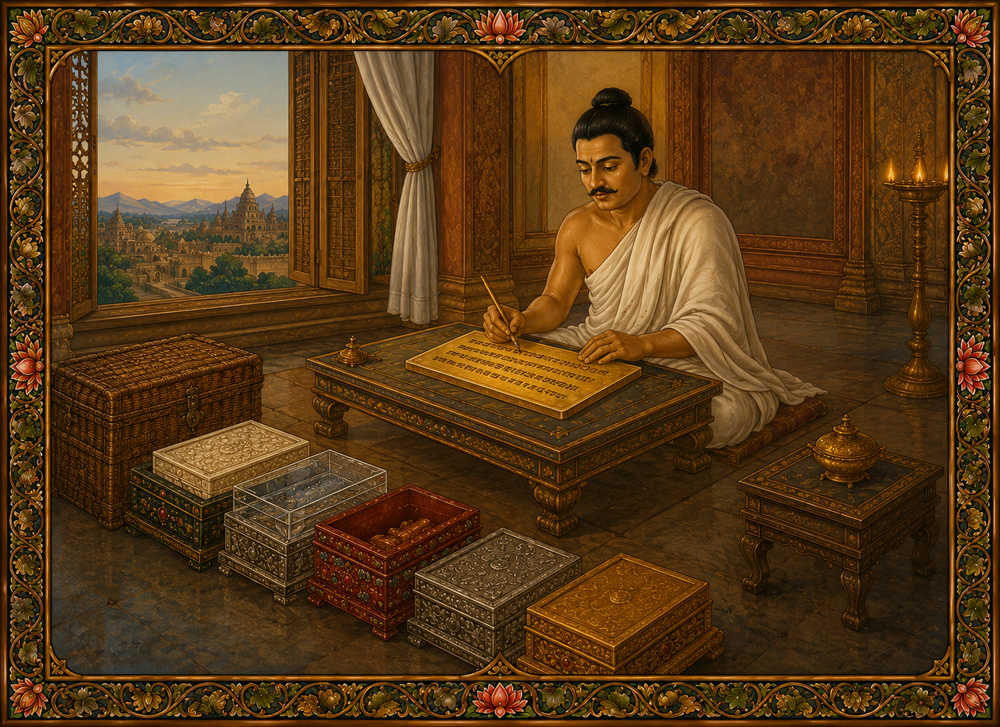

Комментарий к Дхатувибханга сутте (Dhātuvibhaṅgasuttavaṇṇanā)
342. «Так я слышал» (Evaṃ me sutaṃ) — это начало Дхатувибханга сутты.
Здесь слово cārikaṃ «странствуя» означает «быстрое путешествие».
Слова sace te bhaggava agarū «Если тебя это не обременит, Бхаггава» означают: «Если для тебя, Бхаггава-гончар, в этом нет тяжести или неудобства».
Слова sace so anujānātī «Если он позволит» означают: Гончару Бхаггаве пришла такая мысль: «У отшельников бывают разные склонности: один любит общество, другой любит уединение. Если этот уже находящийся внутри монах из тех, кто любит уединение, он скажет вновь пришедшему: "Друг, не входи, эту хижину занял я". Если же этот вновь пришедший монах любит уединение, он скажет первому: "Друг, выходи, эту хижину занял я". В таком случае я стану причиной ссоры между ними. Поэтому что отдано — то отдано, что сделано — то сделано». Поэтому он ответил именно так.
Слово kulaputto «сын из хорошей семьи / благородный юноша» означает благородного человека как по рождению, так и по поведению.
Слово vāsūpagatoti «пришедший для проживания» означает того, кто прибыл, чтобы остановиться на ночлег.
Откуда он пришел? Из города Таккасила.
Предыстория: Дружба Бимбисары и Паккусати
В связи с этим существует последовательный рассказ.
Говорят, в Срединной Стране (Мадджхимадесе), в городе Раджагахе, правил царь Бимбисара. А в пограничных землях, в городе Таккасиле, правил царь Паккусати.
Однажды купцы из Таккасилы, взяв свои товары, прибыли в Раджагаху. Взяв с собой подарки, они явились к царю Бимбисаре. Царь, поприветствовав их, спросил: — Откуда вы, жители? — Мы из Таккасилы, о царь.
Тогда царь, расспросив о мире, урожае в их стране и делах города, спросил: — Как зовут вашего царя? — Его имя Паккусати, о царь. — Праведен ли он? — Да, о царь, он праведен. Он привлекает людей с помощью четырех основ благосклонности, стоит в положении отца и матери для мира и радует людей так, словно они дети, лежащие у него на коленях. — В каком он сейчас возрасте? И они назвали его возраст. Оказалось, что он был ровесником Бимбисары.
Тогда царь сказал им: — Друзья мои, ваш царь праведен и ровесник мне. Могли бы вы сделать вашего царя моим другом? — Можем, о царь.
Царь освободил их от пошлин, предоставил им жилье и сказал: — Идите, продавайте свои товары. А когда придет время уезжать, навестите меня перед отъездом.
Они так и сделали, и перед отъездом явились к царю. Он сказал им: — По возвращении многократно справляйтесь о здоровье вашего царя от моего имени и скажите ему: «Царь желает дружбы с тобой». Они ответили: «Хорошо», и, собрав товары и позавтракав, отправились в путь.
Когда они вернулись, царь спросил: — Друзья, где же вы пропадали все эти дни, что вас не было видно так долго? Они рассказали ему все как было.
Царь Паккусати обрадовался и сказал: — Отлично, друзья мои! Благодаря вам я обрел друга — царя в Срединной Стране.
Спустя некоторое время купцы из Раджагахи также отправились в Таккасилу. Когда они прибыли с подношениями, царь Паккусати спросил их: «Откуда вы прибыли?». Услышав ответ «Из Раджагахи», он сказал: «Вы прибыли из города моего друга!» — Да, о царь.
Справившись о здоровье своего друга («Здоров ли мой друг?»), он приказал бить в барабан и огласить: «Начиная с сегодняшнего дня, всем купцам, которые прибывают из города моего друга, будь то пешим караваном или на повозках, со времени их вступления в мои пределы предоставляйте жилище и продовольствие из царских амбаров, освобождайте их от пошлин и не чините им никаких препятствий».
Царь Бимбисара также сделал подобное объявление с барабаном в своем городе.
Затем Бимбисара отправил Паккусати послание: «В пограничных землях появляются драгоценности, такие как жемчуг и самоцветы. Если в царстве моего друга появится какое-либо драгоценное сокровище, достойное того, чтобы его увидеть или услышать о нем, пусть он не поскупится поделиться им со мной».
Паккусати также отправил ответное послание: «Срединная Страна — это великий край. Если там появится подобная драгоценность, пусть мой друг не поскупится поделиться ею со мной».
Так шло время, и, даже не видя друг друга, они стали крепкими друзьями.
Обмен подарками
Пока они жили в согласии с этим уговором, первым подарок появился у Паккусати. Царь получил восемь бесценных шерстяных покрывал пяти цветов. Он подумал: «Эти покрывала необычайно прекрасны, я отошлю их моему другу».
Он приказал сделать восемь шкатулок из сердцевины дерева размером с игральный шарик, поместил туда эти покрывала, закатал их в лак, обернул белой тканью, положил в ларец, обернул ларец тканью, скрепил царской печатью и отправил сановников со словами: «Передайте это моему другу». Он также передал послание: «Этот подарок следует открыть посреди города в присутствии министров и свиты».
Они отправились и вручили это Бимбисаре. Услышав послание, он велел бить в барабан, созывая министров и прочих. Находясь в центре города в окружении министров, сидя на роскошном троне под белым зонтом, он сломал печать, снял ткань, открыл ларец и развязал внутренний сверток.
Увидев шкатулки размером с игральный шарик, он подумал: «Мой друг Паккусати, вероятно, решил, что его друг обожает играть в кости, раз прислал такой подарок». Он взял одну шкатулку, подержал её в руке и, взвесив, понял: она слишком легкая, внутри спрятан сверток. Тогда он ударил ей о ножку трона, и лак тут же отлетел. Он подцепил шкатулку ногтем, увидел внутри драгоценное покрывало и велел открыть остальные. Все они оказались с покрывалами.
Затем он приказал расстелить эти покрывала. Они были безупречного цвета, превосходны на ощупь, шестнадцать локтей в длину и восемь в ширину. Огромная толпа, увидев их, начала щелкать пальцами, размахивать одеждами и радоваться, говоря: «Невидимый друг нашего царя, Паккусати, не видя его, прислал такой подарок! Поистине, стоит иметь такого друга!»
Царь велел оценить каждое покрывало; все они оказались бесценными. Четыре из них он отослал Истинно Полностью Пробужденному Будде, а четыре оставил в своем дворце.
После этого он задумался: «Тому, кто отправляет подарок вторым, следует послать нечто превосходящее первый подарок. Мой друг прислал мне бесценный дар. Что же мне отправить в ответ?»
«Но разве в Раджагахе нет драгоценностей, превосходящих эту?»
Царь обладает великими заслугами, но с того времени, как он стал «вошедшим в поток», для него не существует другой драгоценности, кроме Трех Драгоценностей (Ти-ратана), способной радовать его ум.
И он начал размышлять о драгоценностях (ratana). Драгоценности бывают двух видов: неодушевленные и одушевленные.
Среди них неодушевленные — это золото, серебро и тому подобное; одушевленные — те, что наделены способностями восприятия (индриями). Неодушевленные служат одушевленным для украшения и прочих нужд. Таким образом, из этих двух видов одушевленные драгоценности — высшие.
Одушевленные также бывают двух видов: животные-драгоценности и люди-драгоценности.
Слон-сокровище и конь-сокровище у Вселенского Монарха относятся к животным, но они рождаются лишь для пользы людей. Таким образом, человек-драгоценность — высший.
Человек-драгоценность бывает двух видов: женщина-драгоценность и мужчина-драгоценность.
Даже женщина-драгоценность, рожденная для Вселенского Монарха, предназначена для него. Значит, мужчина-драгоценность — высший.
Мужчина-драгоценность бывает двух видов: домохозяин и бездомный (монах).
Среди домохозяев Вселенский Монарх — величайший, но даже он кланяется пятью точками (земным поклоном) только что принявшему посвящение юному монаху саманере. Таким образом, бездомный — высший.
Бездомные бывают двух видов: ученик (sekha — тот, кто еще практикует) и закончивший обучение (asekha — тот, кто достиг цели, Арахант).
Даже сто тысяч учеников не стоят и доли одного Араханта. Таким образом, закончивший обучение — высший.
Закончившие обучение тоже бывают двух видов: драгоценность Будды и драгоценность ученика.
Даже сто тысяч Арахантов не сравнятся с одним Буддой. Таким образом, драгоценность Будды — высшая.
Драгоценность Будды бывает двух видов: Паччекабудда (пробудившийся самостоятельно, но не обучающий других) и Саммасамбудда (Истинно и Полностью Пробужденный).
Даже сто тысяч Паччекабудд не стоят и части одного Саммасамбудды. Следовательно, драгоценность Саммасамбудды — наивысшая.
Поистине, во всем мире с его дэвами нет драгоценности, равной Будде.
Решение отправить учение
Подумав: «Я пошлю своему другу несравненную драгоценность», он спросил купцов из Таккасилы: — Друзья мои, известны ли в вашей стране эти три драгоценности: Будда, Дхамма и Сангха? — Великий царь, у нас даже не слыхали о таком, где уж там их увидеть!
«Прекрасно, друзья мои!» — обрадовался царь. Он подумал: «Возможно, мне удастся отправить Истинно Полностью Пробужденного в город моего друга ради блага людей. Но Будды не способствуют наступлению рассвета (не появляются) в пограничных землях. Поэтому Учитель не сможет туда отправиться. Возможно, удастся отправить великих учеников, таких как Сарипутта и Моггаллана. Однако, даже услышав, что старцы живут на окраинах, мне следовало бы послать за ними людей, пригласить их к себе и самому прислуживать им. Поэтому старцы тоже не могут пойти. Я отправлю послание так, чтобы это было подобно тому, как если бы прибыли сам Учитель и его великие ученики».
Запись качеств Трех Драгоценностей на золотой пластине
Подумав так, он приказал изготовить золотую пластину длиной в четыре локтя, шириной в одну пядь, не слишком тонкую и не слишком толстую, решив: «Сегодня я напишу на ней текст».
Утром, вымыв голову, приняв обеты Упосатхи, позавтракав и сняв с себя все благовония, гирлянды и украшения, он взял красную краску с золотым стилосом. Поднявшись во дворец и заперев за собой все двери снизу доверху, он открыл львиное окно, выходящее на восток. Сидя на открытом воздухе, он начал писать на золотой пластине:
«Здесь, в мире появился Татхагата, Арахант, Полностью Пробужденный, наделенный истинным знанием и поведением, Обретший благо, Знаток миров, Непревзойденный вождь тех, кто подлежит усмирению, Учитель богов и людей, Пробужденный, Благословенный».
Так он сначала кратко записал качества Будды.
Затем он добавил: «Так, доведя до совершенства десять парамит, он ушел из мира Тусита и принял зачатие во чреве матери. Пока он пребывал во чреве матери, происходило то-то. Пока он жил жизнью домохозяина, происходило то-то. Так он совершил Великое Отречение и так предался великому усердию. Пройдя через суровые аскезы, он взошел на Великий Трон и, сидя на Непобедимом Троне, обрел всеведение. В мире с его богами нет другой драгоценности подобной этой».
(Далее он цитирует строфы из Ратана сутты):
Какое бы богатство ни было здесь или в ином мире, Или какая бы превосходная драгоценность ни была на небесах — Ничто не сравнится с Татхагатой. Это превосходная драгоценность в Будде; Этой истиной пусть будет благополучие!
Написав вкратце о качествах Будды, он начал восхвалять вторую драгоценность — Дхамму: «Дхамма хорошо изложена Благословенным... должна быть познана мудрыми самостоятельно» и перечислил «Четыре основы осознанности... Благородный Восьмеричный Путь». Написав кратко о тридцати семи факторах пробуждения со словами «Дхамма, которой учит Учитель, такова», он добавил (из Ратана сутты):
То чистое сосредоточение, которое восхвалял Лучший из Будд, Называют немедленно приносящим плоды. Нет сосредоточения, равного ему. Это превосходная драгоценность в Дхамме; Этой истиной пусть будет благополучие!
Написав вкратце о качествах Дхаммы, он начал восхвалять третью драгоценность — Сангху: «Община учеников Благословенного практикует хорошо... непревзойденное поле заслуг для мира. Юноши из благородных семей, услышав проповедь Учителя, оставляют дом и уходят в бездомность. Одни отказываются от белого зонта (царской власти), другие — от поста наместника, третьи — от должностей полководца, и принимают монашество. Став монахами, они исполняют эту практику».
Он кратко описал малые, средние и великие правила нравственности, обуздание шести врат чувств, осознанность и ясное понимание, довольство четырьмя необходимыми вещами, девять видов жилищ, устранение помех, предварительную практику, джханы и высшие знания (абхинья), а также тридцать восемь объектов медитации вплоть до уничтожения загрязнений (асав). Особо подробно он расписал шестнадцать стадий Анапанассати (медитации на дыхание), добавив (из Ратана сутты): «Община учеников Учителя наделена такими качествами».
Те восемь личностей, восхваляемые праведниками, Составляют четыре пары. Они достойны подношений, эти ученики Сугаты. Подношения им приносят великий плод. Это превосходная драгоценность в Сангхе; Этой истиной пусть будет благополучие!
Описав вкратце качества Сангхи, он в самом конце добавил: «Учение Благословенного хорошо изложено и ведет к освобождению; если мой друг способен на это, пусть он оставит дом и примет монашество».
Упаковка послания
Закончив, царь свернул золотую пластину, обернул ее тонкой шерстяной тканью и положил в шкатулку из сандалового дерева. Эту шкатулку он по [принципу матрешки] вложил в серию других: сандаловую — в золотую, золотую — в серебряную, серебряную — в драгоценную, ту — в коралловую, ту — в гранатовую (рубиновую), ту — в шкатулку из камня масарагалла, ту — в хрустальную, хрустальную — в шкатулку из слоновой кости, ту — в шкатулку, украшенную всеми видами драгоценностей.
И наконец, всю эту конструкцию он поместил во внешнюю плетеную корзину.
Торжественная отправка дара из Магадхи в Таккасилу
Снова взяв сандаловую шкатулку, царь Бимбисара тем же способом поместил ее в золотую, а шкатулку, украшенную всеми видами драгоценностей — в плетеную корзину. Затем он поместил плетеную корзину в сандаловый сундук и тем же способом поместил сундук со всеми драгоценностями в плетеный сундук, обернул снаружи тканью, скрепил царской печатью и приказал своим министрам: — Украсьте дорогу везде, где простирается моя власть! Пусть дорога будет шириной в восемь усабх. На ширине в четыре усабхи пусть ее просто очистят от травы и кустов, а посередине на ширине в четыре усабхи пусть подобающе, по царски подготовят.
Затем, украсив царского слона, он велел установить на нем паланкин, поднять белый зонт, а улицы города приказал окропить, подмести, украсить поднятыми флагами и знаменами, банановыми деревьями, полными кувшинами воды, благовониями, курениями, цветами и прочим. Он разослал быстрых гонцов к местным управляющим с приказом: «Совершайте подобные приготовления каждый в своих пределах!».
Сам царь, облачившись во все украшения, с мыслью «Я отправляю подарок!» отправился в сопровождении музыкантов и войск до границы своих владений и дал устное поручение министру: — Друг мой, когда мой друг Паккусати будет принимать этот подарок, пусть он не принимает его среди своих жен, а поднимется во дворец и примет его там.
Передав это послание, он произнес: «Учитель отправляется в пограничные земли!», и, поклонившись пятью точками (полным поклоном), повернул назад. Местные правители, следуя тому же указу, подготовили дорогу и переправили подарок дальше.
Царь Паккусати со своей стороны, начиная от границы своего царства, подготовил дорогу таким же образом, украсил город и вышел навстречу подарку.
Подарок прибыл в Таккасилу в день Упосатхи, и министр, сопровождавший его, передал слова царя. Услышав это, царь распорядился о тех, кто прибыл с подарком, а сам, взяв его, поднялся во дворец. Приказав: «Пусть никто не входит сюда», он поставил стражу у дверей, открыл львиное окно, поместил подарок на высокое сиденье, а сам сел на низкое. Сломав печать и сняв ткань, он начал постепенно открывать вложенные друг в друга ларцы, начиная с плетеного. Увидев сандаловую шкатулку, он подумал: «Такая огромная, грандиозная упаковка не может быть для обычного украшения. Должно быть, в Срединной Стране появилось сокровище, достойное того, чтобы о нем услышали».
Затем он открыл эту шкатулку, сломал царскую печать, убрал тонкую шерстяную ткань с обеих сторон и увидел золотую пластину.
Открытие послания и достижение Джхан
Развернув ее, он начал читать с самого начала, подумав: «Как красивы эти буквы: с ровными верхушками, ровными строками, ровной формы!». Когда он читал о качествах Будды: «Здесь, в мире появился Татхагата», в нем возникла огромная радость, и волосы на девяноста девяти тысячах его пор встали дыбом. Он перестал понимать, стоит он или сидит.
Затем в нем возникла еще более сильная радость, и он подумал: «Даже за сотни тысяч кальп трудно получить такое учение, а я обрел возможность услышать его благодаря своему другу!».
Не в силах читать дальше, он сидел до тех пор, пока буря восторга (пити) не улеглась. Затем он начал читать дальше — о качествах Дхаммы: «Дхамма хорошо изложена Благословенным». И с ним произошло то же самое.
Снова просидев до тех пор, пока буря восторга не стихла, он продолжил читать о качествах Сангхи: «Практикует хорошо». И снова с ним произошло то же самое.
И наконец, прочитав в самом конце объект медитации Анапанассати, он породил четырехчастную и пятичастную джхану и проводил время в счастье джханы. Никто не мог его увидеть, входил только один младший слуга. Так он провел около полумесяца.
Отречение Паккусати
Горожане собрались на царском дворе и стали возмущаться: «Со дня принятия подарка не было ни смотра войск, ни представлений, ни правосудия! Если царь хочет отдать подарок друга кому-то, пусть отдаст! Известно, что цари с помощью таких даров пытаются обмануть некоторых и захватить царство! Что же делает наш царь?»
Услышав этот шум, царь подумал: «Что же мне поддерживать: царство или Учителя?». И ему пришла в голову мысль: «Обязанности царя не может сосчитать ни счеты, ни главный министр по счетам. Я буду последователем Учение Учителя».
Взяв меч, лежавший у ложа, он отрезал себе волосы, открыл львиное окно и со словами: «Возьмите это и правьте царством!» сбросил прядь волос вместе с драгоценным гребнем прямо в толпу. Люди подхватили их и в один голос закричали: — О Господин! Бывают ли где ещё такие цари, получившие подарок от друга?
А у царя волосы и борода остались длиной около двух пальцев. Говорят, это стало похоже на монашеское пострижение самого Бодхисатты.
Затем он послал младшего слугу на рынок, велев принести две монашеские одежды цвета охры (касава) и глиняную чашу. Со словами: «Ради тех Арахантов, что есть в мире, я принимаю монашество» и обращаясь мыслями к Учителю, он надел одну одежду, накинул вторую, повесил чашу на левое плечо, взял посох и стал ходить туда-сюда по большой террасе, размышляя: «Приличествует ли мне монашеский облик или нет?». Решив: «Мой монашеский облик приличествует», он открыл дверь и спустился из дворца.
Когда он спускался, танцоры и прочие, стоявшие у трех ворот, увидели его, но не узнали. Говорят, они подумали: «Какой-то Паччекабудда пришел прочитать нашему царю проповедь».
Но поднявшись в верхний дворец и увидев места, где царь стоял и сидел, они поняли, что царь ушел, и закричали все разом, как люди на корабле, тонущем посреди океана.
Как только благородный юноша спустился на землю, восемнадцать гильдий, все горожане и вооруженные силы окружили его и подняли великий плач. Министры сказали ему: — О Господин, цари Срединной Страны очень коварны. Пошлите послание, и, узнав наверняка, действительно ли Будда появился в мире, тогда и идите. Вернитесь, Господин!
— Я верю своему другу. Между нами нет двуличия. Вы оставайтесь здесь, — ответил он.
Но они продолжали следовать за ним.
Тогда благородный юноша (царь в прошлом) провел посохом черту и спросил: — Чье это царство? — Ваше, Господин. — Всякий, кто переступит эту черту, будет наказан по царскому указу!
В Махаджанака Джатаке царица Сивалидеви не осмелилась переступить черту, проведенную Бодхисаттой, и повернула назад. Толпа последовала за ней. Так и здесь, толпа не осмелилась переступить черту: они останавливались у нее и с плачем поворачивали обратно.
Благородный юноша отправился в путь, не взяв с собой даже ни одного слуги, подумав: «Этот человек мог бы подавать мне зубную палочку или воду для умывания, куда бы я ни пошел». Ему пришла в голову мысль: «Мой Учитель также совершил Великое Отречение и ушел в монашество один», поэтому он пошел один. Подумав: «Мне стыдно перед Учителем» и «Говорят, мой Учитель после ухода в монашество не садился в повозку», он не надел даже однослойных сандалий и не взял с собой зонта из листьев.
Люди забирались на деревья, крепостные стены, сторожевые башни и смотрели: «Наш царь уходит».
Путь из Таккасилы в Раджагаху
Благородный юноша подумал: «Путь предстоит долгий, одному его не одолеть», и примкнул к караванщику.
Из-за того, что изнеженный благородный юноша шел по твердой, раскаленной земле, на подошвах его ног вздулись и лопнули мозоли, причиняя сильную боль. Когда караванщик разбивал лагерь и садился отдыхать, благородный юноша сходил с дороги и садился под деревом. Там не было никого, кто мог бы помассировать ему ноги или спину, поэтому благородный юноша погружался в четвертую джхану на Анапанассати, подавлял усталость, изнеможение и жар пути и проводил время в наслаждении джханой.
На следующий день, встав на рассвете и приведя себя в порядок, он снова следовал за караванщиком. Во время завтрака люди брали чашу благородного юноши и клали в нее твердую и мягкую пищу. Еда была то недоваренной, то разваренной, то с камушками, то пресной, то пересоленной. Благородный юноша, осознавая лишь место, куда пища попадает (горло), съедал ее так, словно это была амброзия. Таким образом он прошел сто девяносто две йоджаны.
Даже проходя мимо ворот Джетаваны в Саваттхи, он не спросил: «Где живет Учитель?». Почему? Из почтения к Учителю и из-за послания, присланного царем. Ведь царь прислал послание: «Здесь в мире появился Татхагата», написав так, словно Учитель находился в Раджагахе. Поэтому он миновал сорок пять йоджан пути, даже не спросив об этом.
Прибыв в Раджагаху на закате солнца, он спросил:
— Где живет Учитель?
— Откуда ты пришел, почтенный?
— С севера.
— Почтенный, на пути, по которому ты пришел, в сорока пяти йоджанах отсюда, есть место под названием Саваттхи, он живет там.
Благородный юноша подумал: «Сейчас не время, я не могу пойти туда. Я переночую здесь сегодня, а завтра отправлюсь к Учителю». Затем он спросил:
— Где останавливаются монахи, прибывшие поздно вечером?
— В мастерской гончара, почтенный.
Тогда он попросил об этом гончара, вошел туда для ночлега и сел.
Сострадание Будды и его путь в Раджагаху
Благословенный в тот же самый день, на рассвете, озирая мир, увидел Паккусати и подумал: «Этот благородный юноша, прочитав всего лишь послание, присланное другом, оставил великое царство размером более трехсот йоджан и ушел в монашество ради меня. Пройдя сто девяносто две йоджаны, он прибудет в Раджагаху. Если я не отправлюсь к нему, то он, так и не постигнув трех плодов отшельничества, умрет по прошествии одной ночи без прибежища. Но если я пойду, он обретет три плода отшельничества. Воистину, именно ради блага и помощи существам я накапливал парамиты на протяжении четырех неисчислимых эпох (асанкхейя) и ста тысяч кальп. Я окажу ему помощь!»
Рано утром, приведя себя в порядок, Благословенный в сопровождении общины монахов отправился за подаянием в Саваттхи. Вернувшись после трапезы, он вошел в Ароматную Келью (Гандхакути), немного отдохнул, чтобы снять телесную усталость, и подумал: «Этот благородный юноша из почтения ко мне совершил трудный поступок. Он оставил царство в триста йоджан и, не взяв с собой даже слуги, чтобы подавать воду для умывания, ушел в бездомность в одиночестве».
Ничего не сказав ни Сарипутте, ни Махамоггаллане, ни кому-либо другому, он сам взял свои чашу и одеяние и вышел один. Отправляясь в путь, он не полетел по воздуху и не стал сокращать землю (используя сверхъестественные силы). Он подумал: «Этот благородный юноша из скромности и уважения ко мне ушел, не садясь ни на слона, ни на коня, ни в колесницу, ни в золотой паланкин; он не надел даже простых сандалий и не взял зонта из листьев. Подобает и мне идти пешком». И он пошел пешком.
Он скрыл свое величие Будды — восемьдесят малых признаков, тридцать два признака Великого Человека и ауру, простирающуюся на сажень. Подобно полной луне, скрытой за облаками, он шел в облике обычного монаха. За одну вторую половину дня он преодолел сорок пять йоджан и подошел к той самой гончарной мастерской на закате, как раз в тот момент, когда туда вошел благородный юноша.
Встреча в гончарной мастерской
Имея в виду именно это, в сутте сказано: «В то время благородный юноша по имени Паккусати ушел из дома в бездомность из веры в Благословенного, и он первым прибыл на ночлег в ту гончарную мастерскую».
Даже пройдя такое расстояние, Благословенный не стал вламываться в мастерскую с заявлением: «Я — Истинно Полностью Пробужденный!». Напротив, стоя в дверях, он вежливо попросил у юноши разрешения: «Если тебе это не доставит неудобств, монах...» и так далее. Комментарий поясняет, что слово «урунда» означает «уединенный» и «просторный» (не стесняющий), а фраза «пусть почтенный пребывает в комфорте» означает разрешение располагаться в любой удобной позе.
Разве благородный юноша, оставивший царство в 300 йоджан, стал бы жадничать и отказывать другому духовному брату в какой-то заброшенной гончарной мастерской? Однако некоторые заблуждающиеся люди, приняв монашество в этом Учении, поддаются жадности к жилищу и отгоняют других от своих мест со словами: «Это моя хижина! Это моя территория!».
«Он сел». Владыка Мира, обладающий невероятной утонченностью, покинул свою Ароматную Келью, подобную небесному дворцу. Он расстелил циновку из травы в гончарной мастерской, похожей на мусорную кучу — грязной от рассыпанной золы, битых черепков, травы, листьев, куриного и свиного помета. Положив сверху свое одеяние из лоскутов (памсукула), он сел на него так, словно находился в своей божественно благоухающей Ароматной Келье.
Благословенный происходил из непрерывного рода царей Махасаммата, и благородный юноша тоже вырос в кшатрийской семье.
Благословенный обладал великими устремлениями, и благородный юноша тоже.
Благословенный оставил царство ради монашества, и благородный юноша тоже.
У Благословенного была кожа золотого цвета, и у благородного юноши тоже.
Благословенный был мастером медитативных достижений, и благородный юноша обладал медитативными достижениями.
Таким образом, оба — кшатрии, оба наделены великими устремлениями, оба — отреклись от царства, оба золотого цвета, оба владеют достижениями. Когда эти двое вошли и сели в гончарной мастерской, то это можно сравнить с пещерой, в которую вошли два льва.
Сев, Благословенный даже не подумал: «Я утонченный, крайне утонченный. Я прошел сорок пять йоджан за полдня, прилягу-ка я на минутку в позе льва, чтобы снять усталость от пути». Он просто сел и сразу вошел в достижение Плода (пхаласамапатти). Благородный юноша также не стал думать: «Я прошел сто девяносто две йоджаны, прилягу на минутку». Он сел и вошел в четвертую джхану Анапанассати.
Ожидание и начало беседы
Но разве Благословенный не пришел, чтобы дать юноше учение? Почему же он не стал учить сразу? Усталость благородного юноши от пути еще не прошла, он не смог бы должным образом воспринять Дхамму. Поэтому Будда ждал, пока он отдохнет. Некоторые комментаторы утверждают: «Раджагаха густо населена, там не бывает тихо из-за десяти видов городского шума. Этот шум стихает только спустя полторы стражи ночи, и Будда ждал этого». Но это неверно. Благословенный своей силой способен подавить даже шум размером с мир Брахмы. Он не учил только потому, что ждал, пока спадет телесная усталость юноши.
Слова сутты «И тогда Благословенному пришло на ум» означают, что Будда вышел из достижения Плода, открыв глаза, наделенные пятью видами красоты, словно открыл украшенное драгоценностями львиное окно в золотом дворце. Увидев благородного юношу, сидящего подобно золотой статуе, неподвижного, как прочно вкопанный дверной столб, без малейшего подергивания рук, ног или головы, он подумал: «Как красиво он сидит! (pāsādikaṃ kho)». В грамматическом смысле pāsādikaṃ здесь означает абстрактное существительное — «поведение/поза, вызывающая доверие и радость».
Среди четырех поз (стояние, ходьба, сидение, лежание) три не выглядят идеально ровными. При ходьбе у монаха двигаются руки, ноги и голова; при стоянии тело напряжено; поза лежащего тоже может выглядеть неэстетично. Но когда монах после трапезы моет руки и ноги, садится в позу лотоса с прямой спиной — эта поза прекрасна. Именно так, скрестив ноги, сидел Паккусати, погруженный в четвертую джхану Анапаны.
«А не спросить ли мне его?» — подумал Будда. Почему он решил спросить? Разве он не знал, что юноша принял монашество ради него? Нет, он знал. Но беседа не завязывается без вопроса. Чтобы начать разговор, он задал вопрос.
Когда в сутте говорится: «Если бы ты увидел его, узнал бы ты его?», Паккусати искренне отвечает: «Не узнал бы». Ибо все легко узнают Будду, когда он сияет своим величием. Но когда он скрыл свои признаки и принял вид обычного монаха, идущего за подаянием, узнать его было невозможно. И это правда — ведь он даже не узнал его, сидя с ним в одном помещении!
Юноша, оставивший царство ради того, чтобы услышать сладкую Дхамму Десятисильного, прошел такой долгий путь и еще не встретил никого, кто сказал бы ему: «Монах, я научу тебя Дхамме». Поэтому, услышав это предложение от незнакомца, он обрадовался, подобно изнывающей от жажды собаке или томимому жаждой слону. Желая слушать со всем вниманием, он с готовностью ответил: «Да, друг» (Evamāvuso).
Почему Будда начал сразу с элементов (Дхату)?
343. «Этот человек состоит из шести элементов» Этими словами Благословенный, минуя предварительную практику, начал обучать благородного юношу характеристике прозрения (випассана), которая является абсолютной пустотностью (суньята) и непосредственной причиной Арахантства.
Тем, чья предварительная практика еще не очищена, сначала преподают такие вещи, как соблюдение нравственности, охрана врат чувств, умеренность в еде, практика бодрствования, семь благих качеств и четыре джханы.
Но тем, чья практика уже очищена, этого не рассказывают. Их сразу учат випассане — непосредственной основе для достижения Арахантства. А предварительная практика благородного юноши была безупречна. Ведь еще стоя во дворце и читая послание друга, он достиг четвертой джханы Анапанассати, которая затем послужила ему средством передвижения (защитой) на протяжении девяноста двух йоджан пути. Также в совершенстве соблюдалась и его нравственность отшельника (самана). Поэтому Благословенный сразу приступил к учению о пустотности.
В выражении «шесть элементов» имеется в виду, что элементы (дхату) существуют в реальности, а вот «человек» (пурисо) — в реальности не существует. Будда в своих проповедях применяет разные методы: иногда он объясняет существующее через существующее, иногда несуществующее через существующее, и так далее (как подробно объясняется в Саббаасава сутте). Здесь же он объясняет несуществующее через существующее.
Если бы Благословенный сразу отбросил понятие «человек» и заговорил исключительно о «элементах», концентрируя на них ум, юноша мог бы засомневаться, запутаться и оказаться неспособным воспринять учение. Поэтому Татхагата — подобно искусному учителю языков (как описано в Анангана сутте) — сначала использует понятие «человек», чтобы постепенно отвести от него. Он подумал: «Понятия "существо", "человек" или "личность" — это лишь условные обозначения (паннатти). В высшем смысле (параматтхато) никакого "существа" не существует. Я направлю его ум исключительно на элементы (дхату) и таким образом приведу к постижению Трех Плодов».
Фраза «состоящий из шести элементов» означает: то, что ты воспринимаешь как «человека», состоит из шести элементов; в высшем смысле никакого человека здесь нет, «человек» — это лишь условное название. То же самое относится и к остальным фразам сутты.
«Имеющий четыре основы» (Caturādhiṭṭhāno): здесь слово adhiṭṭhāna означает «опора/утверждение». Смысл таков: этот монах, этот человек, состоящий из 6 элементов, имеющий 6 опор для контакта и 18 видов умственного исследования, пройдя через весь этот цикл и достигая Арахантства (которое является высшим достижением), утверждается на этих четырех основах. «Где утверждаясь...»: на которых основах утвердившись. «Не возникают помыслы»: не возникают иллюзии/измышления (mañña) или гордыня (māna). «Мудрец называется умиротворенным»: мудрец-арахант, чьи загрязнения уничтожены, называется умиротворенным и остывшим (ниббуто).
«Не следует пренебрегать мудростью»: ради достижения мудрости плода Арахантства, с самого начала не следует пренебрегать мудростью успокоения (саматха) и прозрения (випассана).
«Следует беречь истину»: ради постижения Ниббаны — высшей истины (параматтха сачча) — с самого начала следует беречь истину в двери речи.
«Следует взращивать отречение»: ради полного отказа от всех омрачений посредством пути Арахантства, с самого начала следует развивать отказ от загрязнений (килеса).
«Следует обучаться только умиротворению»: ради успокоения всех омрачений посредством пути Арахантства, с самого начала следует учиться успокаивать ум.
Все эти предварительные основы (саматха, випассана и т.д.) названы ради достижения высших основ — мудрости Араханта.
Кто пренебрегает мудростью?
348. По структуре (матике) сутты далее должна была идти фраза «где утверждаясь, не возникают помыслы». Однако, когда достигается Арахантство, наставления вроде «не следует пренебрегать мудростью» больше не нужны. Поэтому Благословенный, изложив краткое содержание (матику) в обратном порядке от элементов к мудрости, начинает детальный анализ (вибхангу) по прямому порядку дхамм, со слов «не следует пренебрегать мудростью».
Кто же пренебрегает мудростью, а кто не пренебрегает? Тот, кто принял монашество в этом Учении, но зарабатывает на жизнь 21 видом неправильного образа жизни (например, врачеванием) и не может поддерживать состояние ума, подобающее отшельнику — тот пренебрегает мудростью.
А тот, кто, став монахом, утвердился в нравственности, изучил слова Будды, принял подходящие аскетические практики (дхутанга), взял объект медитации (камматтхана), уединился в тихом месте, достиг джхан (через практику касина) и развивает прозрение с твердым намерением: «Сегодня же я достигну Арахантства!» — тот не пренебрегает мудростью.
Но конкретно в этой сутте под «не-пренебрежением
мудростью» подразумевается практика
медитации на элементы (дхату-камматтхана).
Все детали этой практики уже были описаны
в суттах ранее (например, в Сутте о следе
слона) и комментариях к ней.
Махахаттхипадопама-сутта: Большой пример со следами слона
МН 28
редакция перевода: 17.02.2024
Перевод
с английского: SV
источник:
"Majjhima Nikaya by Nyanamoli & Bodhi"
theravada.ru
Так я слышал. Однажды Благословенный проживал в Саваттхи, в роще Джеты, в парке Анатхапиндики. Там достопочтенный Сарипутта обратился к монахам так:
– Друзья, монахи!
– Друг, – ответили они.
Достопочтенный Сарипутта сказал:
– Друзья, подобно тому как след слона покрывает след любого ходячего живого существа, и след слона считается наибольшим среди них по размеру, – точно так же и все благие качества [ума] могут быть включены в Четыре благородные истины. В какие четыре? В благородную истину о страдании... о происхождении страдания... о прекращении страдания... о пути, ведущем к прекращению страдания.
И что такое благородная истина о страдании? Рождение – это страдание; старение – страдание; смерть – страдание; печаль, стенание, боль, грусть и отчаяние – это страдание; неполучение желаемого – страдание. В общем, пять совокупностей, подверженных цеплянию, – это страдание.
И что такое пять совокупностей, подверженных цеплянию? Они таковы: совокупность материальной формы, подверженная цеплянию; совокупность чувства... совокупность восприятия... совокупность формаций... совокупность сознания, подверженная цеплянию. И что такое совокупность материальной формы, подверженная цеплянию? Это четыре великих элемента и составленная из них форма. И что это за четыре великих элемента? Это элемент земли, элемент воды, элемент огня, элемент воздуха.
Элемент земли
И что такое, друзья, элемент земли? Элемент земли может быть либо внутренним, либо внешним. И что такое внутренний элемент земли? Это всё твёрдое и прочное, цепляемое, что находится внутри себя: волосы на голове, волосы на теле, ногти, зубы, кожа, плоть, сухожилия, кости, костный мозг, почки, сердце, печень, диафрагма, селезёнка, лёгкие, толстые кишки, тонкие кишки, содержимое желудка, испражнения и всё иное, что находится внутри, твёрдое, прочное, цепляемое. Это называется внутренним элементом земли.
И внутренний, и внешний элементы земли – это лишь элемент земли. И его следует видеть правильной мудростью в соответствии с действительностью: «Это не моё, я не таков, это не моё "я"». Когда кто-либо видит его в соответствии с действительностью правильной мудростью, то разочаровывается в элементе земли и делает ум бесстрастным по отношению к элементу земли.
И приходит время, когда тревожится внешний элемент воды, и в это время внешний элемент земли исчезает. Так что, если даже в отношении столь обширного внешнего элемента земли можно увидеть непостоянство, разрушение, исчезновение, изменение, так что же тогда в этом непродолжительном теле, цепляемом жаждой, может быть «я», «моим», «тем, каковым я являюсь»? Ничего.
И потому, если другие оскорбляют, бранят, ругают, изводят монаха, он понимает так: «Болезненное [умственное] чувство, рождённое контактом уха, возникло во мне. И оно зависимо, а не независимо. Зависимо от чего? Зависимо от контакта». И он видит, что контакт непостоянен, чувство непостоянно, восприятие непостоянно, формации непостоянны, сознание непостоянно. Его ум, имея своей опорой элемент, входит [в эту опору] и обретает уверенность, устойчивость, твёрдость.
И если другие нападают на монаха нежеланными, нежелательными, неприятными способами – контактами [от ударов] кулаков, камней, палок, ножей – то монах понимает так: «Это [моё] тело имеет такую природу, что подвергается контактам от [ударов] кулаков, камней, палок, ножей. Но вот что было сказано Благословенным в его примере с пилой: «Монахи, даже если бы разбойники беспощадно отрезали вам одну часть тела за другой двуручной пилой, тот, кто зародит злой ум по отношению к ним, не будет исполнять моего учения». Поэтому неутомимое усердие будет зарождено во мне и утверждена неослабевающая осознанность, моё тело будет безмятежным и невзволнованным, ум – достигшим единения и сосредоточенным. И пусть теперь тело подвергается контакту [от ударов] кулаков, камней, палок, ножей, ведь [так мною] практикуется это учение будд».
Когда этот монах таким образом памятует о Будде, Дхамме, Сангхе, [но] невозмутимость, поддерживаемая благими [качествами ума], не утверждается в нём, то он зарождает чувство тревоги так: «Это потеря для меня, а не обретение; плохо для меня, а не хорошо, что, когда я таким образом памятую о Будде, Дхамме, Сангхе, невозмутимость, поддерживаемая благими [качествами ума], не утверждается во мне». Подобно невестке, которая, завидев свёкра, зарождает чувство тревоги [чтобы угодить ему], точно так же, если этот монах памятует о Будде, Дхамме, Сангхе таким способом, [но] невозмутимость, поддерживаемая благими [качествами ума], не утверждается в нём, то он зарождает чувство тревоги.
Но если, когда он памятует таким образом о Будде, Дхамме, Сангхе, невозмутимость, поддерживаемая благими [качествами ума], утверждается в нём, то он удовлетворён этим. На этом этапе, друзья, этот монах [уже] осуществил многое.
Элемент воды
И что такое, друзья, элемент воды? Элемент воды может быть либо внутренним, либо внешним. И что такое внутренний элемент воды? Это всё жидкое и водянистое, цепляемое, что находится внутри: желчь, мокрота, гной, кровь, пот, жир, слёзы, кожное масло, слюна, слизь, суставная жидкость, моча и всё иное, что находится внутри, – жидкое и водянистое, цепляемое. Это называется внутренним элементом воды.
И внутренний, и внешний элементы воды – это лишь элемент воды. И его следует видеть правильной мудростью в соответствии с действительностью: «Это не моё, я не таков, это не моё "я"». Когда кто-либо видит его таким образом правильной мудростью, то он разочаровывается в элементе воды и делает ум бесстрастным по отношению к элементу воды. И приходит время, когда тревожится внешний элемент воды, и он смывает деревни, поселения, города, местности и страны. Приходит время, когда вода в великом океане ниспадает на сто лиг, двести, триста, четыреста, пятьсот, шестьсот, семьсот лиг. Приходит время, когда вода в великом океане имеет глубину [длины] семи пальмовых деревьев, шести пальмовых деревьев, пяти, четырёх, трёх, двух, одного пальмового дерева. Приходит время, когда вода в великом океане имеет глубину в семь саженей, шесть саженей, пять, четыре, три, два, в одну сажень. Приходит время, когда вода в великом океане имеет глубину в пол-сажени, по пояс, по колено, по лодыжку. Приходит время, когда воды в великом океане не хватает даже для того, чтобы намочить одну фалангу пальца.
Так что, если даже в отношении столь обширного внешнего элемента воды можно увидеть непостоянство, разрушение, исчезновение, изменение, так что же тогда в этом непродолжительном теле, цепляемом жаждой, может быть «я», «моим», «тем, каковым я являюсь»? Ничего.
И потому, если другие оскорбляют, бранят, ругают, изводят монаха, он понимает... На этом этапе, друзья, этот монах [уже] осуществил многое.
Элемент огня
И что такое, друзья, элемент огня? Элемент огня может быть либо внутренним, либо внешним. И что такое внутренний элемент огня? Это всё горячее и жгучее, цепляемое, что находится внутри себя: то, за счёт чего [тело] обогревается, стареет, охватывается [жаром]; и всё то, за счёт чего съеденное, выпитое, поглощённое и распробованное полностью переваривается, и всё иное, что находится внутри себя, – горячее и жгучее, цепляемое. Это называется внутренним элементом огня.
И внутренний, и внешний элементы огня – это лишь элемент огня. И его следует видеть правильной мудростью в соответствии с действительностью: «Это не моё, я не таков, это не моё "я"». Когда кто-либо видит его таким образом правильной мудростью, то он разочаровывается в элементе огня и делает ум бесстрастным по отношению к элементу огня.
И приходит время, когда тревожится внешний элемент огня, и он сжигает деревни, поселения, города, местности и страны. Он гаснет из-за нехватки топлива, только когда подходит к зелёной траве, к дороге, к скале, к воде, к светлой открытой местности. И приходит время, когда люди пытаются разжечь огонь даже петушиным пером или обрезками шкуры.
Так что если даже в отношении столь обширного внешнего элемента огня можно увидеть непостоянство, разрушение, исчезновение, изменение, так что же тогда в этом непродолжительном теле, цепляемом жаждой, может быть «я», «моим», «тем, каковым я являюсь»? Ничего.
И потому, если другие оскорбляют, бранят, ругают, изводят монаха, он понимает... На этом этапе, друзья, этот монах [уже] осуществил многое.
Элемент воздуха
И что такое, друзья, элемент воздуха? Элемент воздуха может быть либо внутренним, либо внешним. И что такое внутренний элемент воздуха? Это всё воздушное и ветреное, цепляемое, что находится внутри: восходящие ветры, нисходящие ветры, ветры в желудке, ветры в кишечнике, ветры, идущие по членам тела, вдохи и выдохи, и всё иное, что находится внутри, – воздушное и ветреное, цепляемое. Это называется внутренним элементом воздуха.
И внутренний, и внешний элементы воздуха – это лишь элемент воздуха. И его следует видеть правильной мудростью в соответствии с действительностью: «Это не моё, я не таков, это не моё "я"». Когда кто-либо видит его таким образом правильной мудростью, то он разочаровывается в элементе воздуха и делает ум бесстрастным по отношению к элементу воздуха.
И приходит время, когда тревожится внешний элемент воздуха, и он сдувает деревни, поселения, города, округа и страны. [Но] приходит время, когда в последний месяц жаркого сезона люди ищут ветра, используя веер или меха, и даже трава у стока соломенной крыши не колышется.
Так что если даже в отношении столь обширного внешнего элемента воздуха можно увидеть непостоянство, разрушение, исчезновение, изменение, так что же тогда в этом непродолжительном теле, цепляемом жаждой, может быть «я», «моим», «тем, каковым я являюсь»? Ничего.
И потому, если другие оскорбляют, бранят, ругают, изводят монаха, он понимает... На этом этапе, друзья, этот монах [уже] осуществил многое.
Элемент пространства
Друзья, подобно тому как в зависимости от древесины, лозы, травы и глины окружённое ими пространство называют словом «дом», так и когда пространство окружено костями, сухожилиями, мышцами и кожей, это называют «материальной формой».
Зависимое возникновение
Если, друзья, внутренне глаз не повреждён, но внешние формы не попадают в его область [обзора], а также нет соответствующей вовлечённости [ума], то тогда не возникает соответствующего типа сознания. Если внутренне глаз не повреждён и внешние формы попадают в его область [обзора], но нет соответствующей вовлечённости, то тогда не возникает соответствующего типа сознания. Но когда внутренне глаз не повреждён и внешние формы попадают в его область [обзора], и имеется соответствующая вовлечённость, то тогда возникает соответствующий тип сознания.
Материальная форма того, что таким образом возникло, относится к форме как совокупности, подверженной цеплянию. Чувство того, что таким образом возникло, относится к чувству как совокупности, подверженной цеплянию. Восприятие того, что таким образом возникло, относится к восприятию как совокупности, подверженной цеплянию. Формации того, что таким образом возникло, относятся к формациям как совокупности, подверженной цеплянию. Сознание того, что таким образом возникло, относится к сознанию как совокупности, подверженной цеплянию.
Монах понимает так: «Выходит, вот каким образом имеют место вовлечение, схождение, накопление вещей в этих пяти совокупностях, подверженных цеплянию. И вот как было сказано Благословенным: «Тот, кто видит зависимое возникновение, тот видит Дхамму; кто видит Дхамму, тот видит зависимое возникновение». И эти пять совокупностей, подверженные цеплянию, возникли зависимо. Желание, потакание, предпочтение, удержание, основанное на этих пяти совокупностях, подверженных цеплянию, – это возникновение страдания. Устранение желания и страсти, отбрасывание желания и страсти к этим пяти совокупностям, подверженным цеплянию, – это прекращение страдания». На этом этапе тоже, друзья, этот монах [уже] осуществил многое.
Если, друзья, внутренне ухо не повреждено…
Если, друзья, внутренне нос не повреждён…
Если, друзья, внутренне язык не повреждён…
Если, друзья, внутренне тело не повреждено…
Если, друзья, внутренне ум не повреждён, но внешние умственные феномены не попадают в его область [умственного обзора], а также нет соответствующей вовлечённости, то тогда не возникает соответствующего типа сознания. Если внутренне ум не повреждён и внешние умственные феномены попадают в его область [умственного обзора], но нет соответствующей вовлечённости, то тогда не возникает соответствующего типа сознания. Но когда внутренне ум не повреждён и умственные феномены попадают в его область [умственного обзора], и имеется соответствующая вовлечённость, то тогда возникает соответствующий тип сознания.
Материальная форма того, что таким образом возникло, относится к форме как совокупности, подверженной цеплянию. Чувство того, что таким образом возникло, относится к чувству как совокупности, подверженной цеплянию. Восприятие того, что таким образом возникло, относится к восприятию как совокупности, подверженной цеплянию. Формации того, что таким образом возникло, относятся к формациям как совокупности, подверженной цеплянию. Сознание того, что таким образом возникло, относится к сознанию как совокупности, подверженной цеплянию.
Монах понимает так: «Выходит, вот каким образом имеют место вовлечение, схождение, накопление вещей в этих пяти совокупностях, подверженных цеплянию. И вот как было сказано Благословенным: «Тот, кто видит зависимое возникновение, тот видит Дхамму; кто видит Дхамму, тот видит зависимое возникновение». И эти пять совокупностей, подверженные цеплянию, возникли зависимо. Желание, потакание, предпочтение, удержание, основанное на этих пяти совокупностях, подверженных цеплянию, – это возникновение страдания. Устранение желания и страсти, отбрасывание желания и страсти к этим пяти совокупностям, подверженным цеплянию, – это прекращение страдания». На этом этапе тоже, друзья, этот монах [уже] осуществил многое.
Так сказал достопочтенный Сарипутта. Довольные, монахи восхитились словами достопочтенного Сарипутты.
Переход к нематериальному (Арупа) и чувствам (Ведана)
354. «Затем остается лишь сознание» Это особый смысловой переход. Выше был объяснен объект медитации, связанный с формой (рупа-камматтхана — то есть элементы земли, воды, огня и ветра). Теперь же Будда приступает к изложению нематериального объекта (арупа-камматтхана) через чувство (ведана). Либо можно сказать, что эта проповедь направлена на то, чтобы показать сознание (работающее посредством прозрения), которое этот монах должен направить на элементы земли и так далее.
Для чего же оно «остается»? Оно остается для того, чтобы Учитель мог о нем рассказать, а благородный юноша мог его постичь.
Очищенное: лишенное омрачений.
Безупречное: сияющее.
«Он знает: 'Это приятно'»: чувствуя приятное ощущение, он ясно распознает: «Я чувствую приятное ощущение». (Тот же принцип касается неприятных и нейтральных ощущений).
Если бы это учение о чувствах не было подробно разобрано ранее (в Сатипаттхана сутте), его следовало бы детально объяснить здесь. Слова «обусловленное приятным чувством» и так далее сказаны для того, чтобы показать возникновение и исчезновение (аччайя) явлений в зависимости от причин.
Четвертая Джхана и сравнение с золотом
360. «Остается только невозмутимость» (Упеккха) Здесь ситуация такова. Подобно опытному ювелиру, который прокалывает жемчужины алмазной иглой и сбрасывает их на кусок кожи, а его ученик берет их одну за другой и нанизывает, создавая жемчужные ожерелья и сети — так же и этот благородный юноша снова и снова размышлял над объектом медитации, который Будда излагал ему часть за частью, и обрел в нем мастерство. Таким образом, он овладел и рупа-камматтханой, и арупа-камматтханой.
Тогда Благословенный сказал: «Далее остается только невозмутимость». Зачем она остается? Только для того, чтобы Учитель мог о ней рассказать. Некоторые говорят «для того, чтобы юноша мог ее постичь», но это неверно! Ведь юноша уже достиг четвертой джханы Анапанассати (где доминирует невозмутимость-упеккха) еще стоя на террасе дворца, и эта джхана несла его через весь этот долгий путь.
Поэтому в данном месте Учитель просто восхваляет достигнутую юношей джхану сферы форм (рупавачара). Смысл таков: «Монах, эта твоя четвертая джхана доведена до совершенства». Слова «очищенная» и так далее — это похвала именно этой невозмутимости.
Сравнение с очищенным золотом:
«Разведет горн» — приготовит железную сковороду для углей.
«Разожжет его» — положит туда уголь, подожжет и раздует огонь через трубку.
«Поместит в устье горна» — раздвинет угли и положит золото сверху, или поместит прямо в расплавленную массу.
«Извлеченное» — очищенное от дефектов.
«С устраненными примесями» — избавленное от грязи.
Точно так же, как очищенное золото становится пригодным для создания любого украшения, какого пожелает ювелир, эта невозмутимость четвертой джханы пригодна для чего угодно: для прозрения, для обретения сверхъестественных сил (абхиння), для достижения прекращения (ниродха) или для выбора перерождения в высших мирах. Именно так Будда восхваляет совершенство его ума.
Но почему Благословенный восхвалил эту четвертую джхану сферы форм (рупавачара), вместо того чтобы порицать ее ради искоренения привязанности?
Ибо у благородного юноши возникновение привязанности к четвертой джхане было сильным.
Если бы он порицал ее, благородный юноша мог бы впасть в сомнение и замешательство, подумав: «Когда я оставил мирскую жизнь и прошел пешком сто девяносто две йоджаны, эта четвертая джхана послужила мне средством передвижения. Я проделал этот долгий путь, наслаждаясь счастьем и радостью джханы. А Благословенный порицает столь возвышенную Дхамму. Со знанием ли дела он говорит или по неведению?». Поэтому Благословенный восхвалил ее.
361. В выражении «сообразно этой Дхамме» (tadanudhammaṃ), нематериальная джхана (арупавачара) именуется Дхаммой, а джхана сферы форм (рупавачара) называется «анудхаммой» (anudhammo, тем, что сообразно Дхамме), поскольку она следует за этой Дхаммой (подводит к ней).
Либо же джхана как плод (випака-джхана) — это Дхамма, а благая джхана (кусала-джхана) — это анудхамма.
«Опираясь на это» (tadupādānā) означает цепляясь за это, захватывая это.
«На долгое время, на длительный срок» означает на двадцать тысяч капп (кальп).
Это было сказано применительно к результату (созреванию каммы — випака). Тот же метод применим и к последующему тексту.
362. Восхвалив таким образом нематериальную джхану (арупавачара) четырьмя способами, теперь Будда указывает на ее недостатки, говоря: «Он так понимает» и так далее.
Здесь слова «это обусловлено» (saṅkhatametaṃ) означают: хотя продолжительность жизни там составляет двадцать тысяч капп, тем не менее, это состояние обусловлено, сконструировано, накоплено, создано действием; оно непостоянно, нестабильно, не вечно, временно, подвержено исчезновению, распаду и разрушению; сопровождается рождением, пронизано старостью, атаковано смертью, укоренено в страдании, лишено защиты, лишено укрытия, лишено прибежища, не является истинным прибежищем.
Тот же метод анализа применим и к сфере бесконечного сознания, и ко всем остальным сферам.
Теперь, переходя в своем наставлении к вершине — Арахантству, он говорит: «Он не конструирует это» и так далее.
Подобно искусному врачу, который, видя токсичное действие яда, вызвал бы рвоту, вывел бы яд из его местонахождения, не позволил бы ему подняться к плечам или голове и изверг бы этот яд на землю; точно так же Благословенный восхвалил нематериальную джхану (арупавачара) перед благородным юношей.
(Прим. пер.: В пали сказано arūpāvacarajjhāne — арупавачара, что в данном контексте соответствует восхвалению возвышенных сфер, чтобы вывести ум Паккусати из "яда" более грубой привязанности).
Услышав это, благородный юноша искоренил привязанность к джхане сферы форм (рупавачара) и устремился к нематериальной джхане (арупавачара).
Благословенный, зная это, обратился к монаху, который еще не достиг и не реализовал ее (арупа-джхану), сказав: «Действительно, в сфере бесконечного пространства и прочих сферах существует такое достижение.
Ибо продолжительность жизни в первом мире Брахмы составляет двадцать тысяч капп, во втором — сорок тысяч, в третьем — шестьдесят тысяч, а в четвертом — восемьдесят четыре тысячи капп.
Но это состояние непостоянно, нестабильно, не вечно, временно, подвержено исчезновению, распаду и разрушению; сопровождается рождением, пронизано старостью, атаковано смертью, укоренено в страдании, лишено защиты, лишено укрытия, лишено прибежища, не является истинным прибежищем. И даже испытав это достижение там на протяжении такого долгого времени, обычный человек (путхуджджана), умерев, вновь упадет в четыре нижних мира (апайи)». Все эти недостатки он подытожил одним-единственным словом: «Это обусловлено» (saṅkhatametaṃ).
Услышав это, благородный юноша искоренил привязанность к нематериальной джхане (арупавачара). Благословенный, зная, что его привязанность и к рупавачара-джхане, и к арупавачара-джхане полностью искоренена, перешел к вершине Арахантства, сказав: «Он не конструирует это» и так далее.
Или, подобно тому как великий воин, угодив царю, мог бы получить превосходную деревню, приносящую доход в сто тысяч; но затем царь, вспомнив о его силе, подумал бы: «Этот воин могуч, он получил слишком мало», и сказал бы: «Мой дорогой, эта деревня не подходит тебе. Возьми другую, приносящую доход в четыреста тысяч», и отдал бы ее. И тот ответил бы: «Хорошо, о государь», оставил бы первую деревню и взял другую.
И царь призвал бы его еще до того, как тот успел бы прибыть в ту деревню, и сказал бы: «Что тебе до нее? Там свирепствует змеиная болезнь. Но в таком-то месте есть великий город. Подними там царский зонт и правь!», и отправил бы его туда. И тот так бы и поступил.
В этом сравнении Истинно Полностью Пробужденный (Саммасамбуддха) подобен царю; благородный юноша Паккусати подобен великому воину; первая полученная деревня подобна четвертой джхане на внимательности к дыханию (анапана); момент, когда было сказано «оставь ту и возьми другую деревню», подобен искоренению привязанности к четвертой джхане анапаны и изложению учения о нематериальных сферах (аруппа); а момент, когда он был призван еще до прибытия в ту деревню и ему было сказано: «Что тебе до нее? Там возникает змеиная болезнь. В таком-то месте есть город, подними там царский зонт и правь!», подобен тому, как Будда указал на недостатки нематериальных сфер, назвав их «обусловленными» (санкхата), и тем самым заставил его отбросить устремление к этим достижениям еще до того, как они были достигнуты, и возвысил наставление к вершине Арахантства.
Здесь «не конструирует» (neva abhisaṅkharoti) означает: не накапливает камму, не собирает ее в груду.
«Не замышляет» (na abhisañcetayati) означает: не измышляет, не строит умственных конструкций.
«Ради существования или несуществования» (bhavāya vā vibhavāya vā) означает: ради роста или ради упадка; это также следует применять в значении этернализма (веры в вечное бытие) и аннигиляционизма (веры в полное уничтожение).
«Ни к чему в мире не привязывается» (na kiñci loke upādiyati) означает: не захватывает и не цепляется с жаждой ни за одно явление в мире, такое как форма (рупа) и прочее.
В выражении «понимает: 'нет более возврата в это состояние'» (nāparaṃ itthattāyāti pajānāti): Благословенный, пребывая в своей сфере Будды, увенчал учение вершиной Арахантства.
Однако благородный юноша Паккусати реализовал три (низших) плода отшельничества в соответствии со своими собственными духовными накоплениями/склонностями (упаниссая).
Подобно царю, который, вкушая разнообразные изысканные яства из золотого блюда, скатывает для себя большой кусок (шарик) еды в соответствии со своей мерой, и когда сидящий у него на коленях принц проявляет желание к этому куску, царь протягивает его ему. Принц же откусывает кусок ровно по размеру своего рта, а остальное царь съедает сам или кладет обратно в чашу. Точно так же Царь Дхаммы, Татхагата, преподал учение, возведя его к вершине Арахантства по Своей собственной мере, а благородный юноша постиг три (низших) плода отшельничества в соответствии со своими духовными склонностями.
213 До этого момента, когда Будда говорил о таких совершенно пустотных явлениях, как совокупности (кхандхи), элементы (дхату) и сферы чувств (аятаны), отмеченных тремя характеристиками (тилаккхана), у Паккусати не возникало ни сомнений, ни недоумения, ни мыслей вроде: «Так оно и есть, как сказал мой учитель», — не было ни колебаний, ни нерешительности (в отношении самого учения).
Но, как известно, иногда Будды странствуют в неузнаваемом облике, поэтому у него все же было сомнение и недоумение относительно того, является ли сидящий перед ним Истинно Полностью Пробужденным (Саммасамбуддхой).
Но когда он реализовал плод Невозвращения (Анагами-пхала), тогда он пришел к полному убеждению: «Это мой Учитель».
Если так, то почему он сразу не раскаялся в своем проступке (обращении к Будде «авусо»)? Из-за отсутствия возможности.
Ибо Благословенный давал наставление непрерывным потоком, в соответствии с заложенной основой (матика), словно низвергал с небес реку Ганг.
363. «Он» (so) означает Араханта.
«Неосвоенные» (anajjhositā) означает: он понимает, что их (чувства) не следует проглатывать, доводить до конца и присваивать.
«Неодобряемые» (anabhinanditā) означает: он понимает, что не подобает наслаждаться ими под влиянием жажды (танха) и ложных воззрений (диттхи).
364. Выражение «Он испытывает их (чувства) отстраненно/обособленно» (visaṃyutto naṃ vedeti): Если бы скрытая склонность к страсти (раганусая) возникала бы у него в отношении приятного чувства, или скрытая склонность к отвращению (патигханусая) — в отношении болезненного чувства, или скрытая склонность к неведению (авиджджанусая) — в отношении нейтрального чувства, то он бы испытывал их как «сопряженный» (самьютто, привязанный).
Но поскольку они не возникают, он испытывает их обособленно, отрешенно и свободно.
«Ограниченные телом» (kāyapariyantikaṃ) означает оканчивающиеся вместе с телом. Смысл в том, что чувства, возникающие до тех пор, пока существует тело, больше не возникают за этим пределом.
Тот же метод применим и ко второй фразе (чувства, ограниченные жизнью — jīvitapariyantikaṃ vedanaṃ).
«Не одобряемые им чувства остынут» (anabhinanditāni sītībhavissantīti) означает, что из-за отсутствия привязанности омрачений (килеса) в двенадцати сферах чувств (аятана), они останутся неодобряемыми и угаснут прямо здесь, в этих самых двенадцати сферах.
Действительно, хотя омрачения прекращаются благодаря Ниббане, говорят, что они прекратились там, где их больше нет.
Этот смысл следует проиллюстрировать вопросом о происхождении (возникновении): «Именно здесь эта жажда, прекращаясь, прекращается».
Поэтому Благословенный сказал, что даже омрачения, остыв благодаря Ниббане, станут холодными (остынут) прямо здесь.
Но разве здесь не говорится о чувствах (ведайитани), а не об омрачениях (килеса)?
Чувства также остывают исключительно по причине отсутствия омрачений.
Иначе ни о каком их «остывании» не могло бы быть и речи; поэтому это сказано совершенно верно.
365. «Точно так же» (evameva kho): здесь приводится следующее сравнение. Подобно тому, как человек, когда масло в горящей лампе истощается, подливает еще масла, а когда сгорает фитиль, вставляет новый фитиль, и так пламя лампы остается непрерывным; точно так же обычный человек (путхуджджана), пребывая в одном существовании, совершает благие и неблагие деяния и благодаря этому перерождается в счастливых или несчастных уделах. Таким образом, чувства остаются непрерывными.
Но подобно тому, как некий человек, уставший от пламени лампы, подумав: «Из-за этого человека (что подливает масло и меняет фитиль) пламя лампы не гаснет», устранил бы этого человека, и тогда, оставшись без подпитки фитилем и маслом, пламя лампы угасло бы; точно так же и монах, уставший от круговорота существования, искореняет благие и неблагие деяния посредством пути Арахантства. Поскольку они искоренены, после распада тела Араханта (монаха, чьи омрачения иссякли), чувства больше не возникают.
«Поэтому» (tasmā): потому что знание плода Арахантства превосходит начальное знание самадхи, прозрения и мудрости. «Так наделенный» (evaṃ samannāgato): наделенный этим высшим основанием знания — плодом Арахантства. «Знание об уничтожении всех страданий» относится к знанию пути Араханта, но в данной сутте имеется в виду знание плода Арахантства. Именно поэтому сказано: «Его освобождение, утвержденное в истине, непоколебимо».
366. Здесь «освобождение» означает освобождение плода Арахантства, а «истина» означает высшую истину — Ниббану. Таким образом, оно называется «непоколебимым», потому что его объект непоколебим. «Ложное» означает неверное, ошибочное. «Подверженное разрушению» означает имеющее природу погибать. «Истинное» означает то, что имеет не-ложную природу. «Не подверженное разрушению» означает имеющее природу не погибать (неразрушимое).
«Поэтому»: потому что Ниббана, являющаяся высшей истиной, абсолютно превосходит начальное познание посредством саматхи и прозрения, а также превосходит истину речи, истину о страдании и истину о происхождении страдания. «Так наделенный»: наделенный этим превосходным основанием высшей истины.
367. «Ранее»: во времена пребывания обычным человеком (путхуджджаной). «Существуют привязанности» (упадхи): существуют такие привязанности, как привязанность к совокупностям (кхандхам), привязанность к омрачениям (килесам), привязанность к волевым формациям (санкхарам) и привязанность к пяти чувственным удовольствиям. «Полностью восприняты и удерживаемы»: полностью захвачены и крепко удерживаемы. «Поэтому»: потому что оставление омрачений посредством пути Арахантства абсолютно превосходит начальное оставление омрачений посредством саматхи и прозрения, а также оставление омрачений путем Вхождения в поток и последующими путями. «Так наделенный»: наделенный этим превосходным основанием оставления (отречения).
368. В словах «злоба» и так далее: «злоба» означает действие с враждебностью; «недоброжелательность» означает действие со злым умыслом; а «возмущение» означает действие с полным осквернением ума. Таким образом, через эти три термина говорится исключительно о неблагом корне ненависти (доса). «Поэтому»: потому что успокоение омрачений посредством пути Арахантства абсолютно превосходит их начальное успокоение посредством саматхи и прозрения, а также успокоение путем Вхождения в поток и так далее. «Так наделенный»: наделенный этим превосходным основанием успокоения.
369. «Это измышление»: это может быть измышлением на основе жажды, измышлением на основе самомнения или измышлением на основе ложного воззрения — применимы все три варианта. Однако в выражении «Я есть это» фраза «это я» относится только к измышлению на основе жажды. В словах «болезнь» и так далее: «болезнь» — в смысле недуга; «нарыв» — в смысле внутреннего осквернения; «стрела» — в смысле пронзания. «Мудрец зовется умиротворенным»: мудрец-Арахант, чьи омрачения иссякли, зовется умиротворенным, достигшим покоя Ниббаны. «Где утвердившись»: в каком состоянии он утвердился.
«Вкратце»: на самом деле все наставления Будды кратки; не существует такого понятия, как развернутое наставление (по сравнению с полнотой его всеведения). Даже наставление об Условиях (Паттхана) является кратким. Таким образом, Благословенный завершил наставление в соответствии с логической последовательностью. Среди четырех типов людей благородный юноша Паккусати относился к тем, кто понимает через подробное объяснение (випанчитаньнью). Поэтому Благословенный преподал эту «Дхатувибханга сутту» как для человека, постигающего через подробное объяснение.
370. «Почтенный, мои чаша и одеяние не полны». Почему же для благородного юноши не были сверхъестественным образом созданы чаша и одеяния? Потому что в прошлых жизнях он не подносил монахам восемь обязательных принадлежностей. Но не следует говорить, что благородный юноша вообще не делал подношений, ибо он совершал даяния и делал духовные устремления. Однако сверхъестественно созданные чаша и одеяние появляются только у тех, кто находится в своем самом последнем рождении, а этот (Паккусати) еще подлежал перерождению (он стал Анагами и должен был родиться в Чистых Обителях). Поэтому они и не появились.
Почему же тогда Благословенный сам не отправился на поиски и не посвятил его? Из-за отсутствия возможности. Срок жизни благородного юноши подошел к концу. Он был подобен Великому Брахме, Анагами из обители Суддхаваса (Чистых Обителей), который пришел и просто сел в гончарной мастерской. Поэтому Будда сам не отправился на поиски.
«Он ушел на поиски чаши и одеяния». В какое время он ушел? На рассвете. Говорится, что завершение наставления Благословенного, наступление рассвета и излучение лучей (из тела Будды) произошли одновременно. Говорится, что Благословенный, завершив наставление, немедленно испустил шестицветные лучи, и все жилище гончара осветилось, словно единым источником света. Шестицветные лучи, распространяясь во всех направлениях, вспышка за вспышкой, масса за массой, сияли так, словно мастерская была украшена золотыми пластинами, искрилась цветами и драгоценными камнями. Благословенный принял решение: «Пусть горожане увидят меня». Горожане, увидев Благословенного, стали говорить друг другу: «Похоже, Учитель прибыл; похоже, он сидит в гончарной мастерской», после чего сообщили об этом царю.
Царь прибыл, выразил почтение Учителю и спросил: «Почтенный, в какое время вы прибыли?». «Вчера на закате солнца, великий царь», — ответил Будда. «Ради какой цели, Благословенный?». «Твой друг, царь Паккусати, услышав отправленное тобой послание, оставил дом, стал отшельником и отправился искать меня. Он миновал Саваттхи, прошел сорок пять йоджан, вошел в эту гончарную мастерскую и сел. Я пришел, чтобы оказать ему поддержку, и преподал наставление по Дхамме. Этот благородный юноша реализовал три плода отшельничества, великий царь». «Где же он сейчас, Почтенный?». «Он попросил о посвящении, но из-за того, что его чаша и одеяние были не укомплектованы, он отправился на их поиски, великий царь».
Царь отправился в том направлении, куда ушел юноша. Благословенный же, поднявшись в воздух, появился прямо в своей Ароматной хижине (Гандхакути) в роще Джеты.
Юноша, разыскивая чашу и одеяние, не пошел ни к царю Бимбисаре, ни к странствующим купцам из Таккасилы. Ему пришла мысль: «Не подобает мне искать чашу и одеяние то тут, то там, ковыряясь и перебирая, словно курица. Обойдя великий город, я буду искать на водопоях, на кладбищах, на мусорных кучах и в переулках». И он начал с поиска лоскутов ткани на мусорной куче в одном из переулков.
«Лишила жизни»: когда он искал лоскуты на этой мусорной куче, обезумевшая молодая корова подбежала и забодала его насмерть своими рогами. Юноша, чей срок жизни подошел к концу еще в воздухе (от удара рогом), упал на землю. Он лежал на мусорной куче лицом вниз, словно золотая статуя. После смерти он переродился в мире Брахмы, называемом Авиха, и тотчас же после перерождения достиг Арахантства. Говорится, что семь человек достигли Арахантства сразу же после перерождения в мире Брахмы Авиха. Об этом было сказано (в Самьютта Никае 1.50):
«Семь монахов, переродившись в Авихе, Свободные от страсти и ненависти, Преодолели мирские путы, эту топь, которую так трудно пересечь, Оставив человеческое тело, они взошли в божественную сферу. Упака, Палаганда и Паккусати — вот эти трое; Бхаддия, Кхандадева, Бахурагги и Сингия; Оставив человеческое тело, они взошли в божественную сферу».
Царь Бимбисара также подумал: «Мой друг, царь Паккусати, лишь прочитав отправленное мной послание, оставил царство, находившееся в его руках, и проделал столь долгий путь. Этот юноша совершил трудное деяние. Я окажу ему почести, подобающие отшельнику». И он разослал людей в разные стороны со словами: «Отыщите моего друга». Посланники нашли его умершим на мусорной куче. Увидев это, они вернулись и доложили царю. Царь отправился туда, увидел юношу и сказал: «Увы, друзья, мы не смогли воздать почести нашему другу. Мой друг остался беззащитным».
Оплакав его, он велел перенести благородного юношу на ложе и положить в подобающем месте. Поскольку никто не знал, как правильно проводить обряды для того, кто еще не принял полного монашеского посвящения, царь созвал банщиков, цирюльников и прочих. Он велел омыть голову юноши, одеть его в чистые одежды, украсить царскими убранствами и положить на золотой паланкин. Воздавая почести с использованием всевозможных музыкальных инструментов, благовоний, гирлянд и прочего, он вынес тело за пределы города. Он приказал сложить огромный погребальный костер из множества сортов деревьев, провел погребальные обряды для благородного юноши, собрал его реликвии и воздвиг над ними ступу.
Остальное предельно ясно повсюду в тексте.
Комментарий к Мадджхима Никае, именуемый «Папанчасудани». Толкование «Дхатувибханга сутты» завершено.
Комментарий к Дхатувибханга
сутте
(Тика)
342. Когда говорится: «передвигаясь с поспешностью», следует понимать, что это путешествие было предпринято ради благородного юноши Паккусати, чья продолжительность жизни еще не иссякла. «Если нет»: если в твоем уме нет недовольства или неприятного чувства из-за моего приближения. «Тот»: относится к тому, кто прибыл раньше (т.е. к Паккусати, который уже находился в мастерской). «То, что дано, действительно дано»: смысл в том, что пожертвованное один раз является правильно пожертвованным, и это не следует отдавать (кому-то другому) повторно. «То, что сделано, действительно сделано»: смысл в том, что подобающий поступок, совершенный ради оказания поддержки (в данном случае — ради принятия монаха), уже совершен, и его не следует отменять (или изменять свое решение).
Юноша Паккусати был совершенен в обоих отношениях, поэтому сказано: «благородный юноша по рождению и благородный юноша по поведению». «Там»: во время того прибытия из Таккасилы. «Радует людей»: приносит им радость и удовлетворение, подобно ребенку, лежащему на коленях. «Драгоценности появляются»: потому что пограничный регион изобилует горами, океанами и тому подобным (где добывают драгоценности). «Приятный для взора»: приносящий счастье одним лишь своим видом. «Такого рода»: приятный для взора и приятный для слуха.
«В бесценный шерстяной плед»: в дорогостоящий шерстяной плед. «В шкатулку из эссенций»: в шкатулку, сделанную из ценных материалов, таких как сердцевина сандалового дерева. «Повелев вырезать»: приказав выгравировать (или написать). «Запечатав лаком»: закрыв отверстие (шкатулки) и заделав его лаком.
«Он понял, что внутри находится сверток ткани»: потому что шкатулка была не очень тяжелой. «Они были бесценными»: они были невероятно дорогими из-за своей красоты, превосходной текстуры (на ощупь), большого размера и сложности изготовления. Смысл в том, что царь, обладая великими заслугами, имел в своем распоряжении такие вещи.
Если так (если у него были бесценные дары), почему же он задался вопросом: «Что мне отправить?». На это в тексте говорится: «Тем не менее» и так далее. «Он»: царь Бимбисара. «Начал перебирать»: потому что драгоценности бывают многих видов, и каждая следующая может быть все более превосходной и выдающейся. «Золото, серебро и так далее»: золото, серебро, кораллы, драгоценные камни, жемчуг, кошачий глаз (берилл) и так далее. «Связанное с индриями»: связанное с чувствами, такими как зрение и прочие (т.е. воспринимаемое чувствами). «Долю (часть)»: это не достигает даже малой доли (сравнимо с качествами Будды).
В силу того, что они (Будды) одинаково и лично постигают Истины, сказано: «Драгоценность Будды также бывает двух видов». Не существует драгоценности, равной Драгоценности Будды, потому что в этом мире или в следующем нет никого, кто был бы равен Будде. В словах «даже звук» (или молва) и так далее: это сказано так, потому что подобное (звучание слова "Будда") возникает только во время самого первого пробуждения.
Царь возрадовался и подумал: «Мне удалось отправить то, чего там (в Таккасиле) не найти».
394. «Поэтому»: потому что не было ни единого дня, чтобы Будды полностью не утвердились в этой области, поэтому. «Обращенное на восток»: окно (в форме львиной клетки), выходящее на восточную сторону. Этим он указывает на хорошее освещение.
Чтобы показать, что появление Благословенного, равного которому нет, было столь необычайным, сказано: «Таким образом исполнив десять совершенств (парами)» и так далее. Чтобы показать, что такой плод (появление Будды) был достоин столь совершенного прихода, сказано: «из обители Тусита» и так далее.
«Благородная Дхамма» (Ария-дхамма) — это прежде всего Благородный Путь, а Благородный Путь включает в себя тридцать семь факторов пробуждения (бодхипаккхия-дхамма). Поскольку они были приведены только в качестве перечисления, сказано: «написав часть тридцати семи факторов пробуждения». Малая мораль (Чула-сила) и остальные (Средняя и Великая) должны пониматься так, как они изложены в Брахмаджала сутте. «Обуздание шести врат и осознанность с ясным пониманием»: осознанность и ясное понимание в семи сферах, благодаря обузданию шести врат (органов чувств), где ум является шестым. «Удовлетворенность четырьмя предметами первой необходимости», такими как одеяния и прочее, которые подразделяются на двенадцать видов. «Жилище», подходящее для духовной практики, с его различными категориями, такими как лес, подножие дерева и так далее. «Устранение препятствий (ниварана)», как сказано в словах: «Устранив алчность в мире» и так далее. «Подготовительная практика»: подготовительная работа при медитации касины и прочих объектах. «Тридцать восемь объектов медитации», как они изложены в Палийском каноне. Эту практику, вплоть до уничтожения омрачений (асаваккхая), «он записал частично» в соответствии с последовательностью очищения ума (висуддхи). «Шестнадцать видов»: применение шестнадцати видов развития (медитации).
«В плетеном из тростника (или ротанга)»: в искусно сделанном из тростника ларце (шкатулке), богато украшенном различными стенками (отделениями) и инкрустированном мелкими, мягкими драгоценными камнями. «Обернув тканью снаружи»: сначала обернув тонким шерстяным пледом, затем поместив последовательно в тридцать три шкатулки, а затем обернув и накрыв снаружи тонкой тканью. «Пусть она будет просто расчищена» путем подметания, удаления травы, сорняков и так далее; смысл в том, что не следует украшать дорогу банановыми деревьями, полными кувшинами воды, поднятием флагов и прочими торжественными декорациями. «Приготовьте это с царским величием»: смысл в том: «приготовьте и украсьте это так, как подобает моему царскому статусу». «Внутренним служащим»: царским министрам и высшим чиновникам. «Быстрым посланникам»: людям, которые являются скороходами (быстро доставляют сообщения). «Музыканты»: те, кто не передвигается без музыкальных инструментов (тарелок/барабанов).
Поскольку посланник услышал от министра, что царь (Бимбисара) совершил подношения и оказал почести этому дару, царь (Паккусати), «поместив этот дар на высокое место, сам сел на низкое сиденье». Объяснение слов: «Это не послужит для иной драгоценности» означает: это не будет использовано для другой драгоценности, такой как рубины, жемчуг и прочее, поскольку этот дар (уже сам по себе) освящен рубинами и жемчугом.
395. У него возникла сильная радость, потому что благодаря практике (бхаване), развиваемой долгое время в учении Будды (в прошлых жизнях), и укоренившимся склонностям, эта радость вспыхнула внутри него, подобно лампе в кувшине, из-за созревания (каммических) причин и условий. «Я принимаю» означает: «я желаю, я беру». «Двусмысленное (колеблющееся) высказывание» означает состояние недоумения или замешательства. «Он делает промежуток» означает, что он делает зазор между своими двумя ногами над этой линией; смысл в том, что он перешагивает ее одной ногой. «По пути, по которому она шла»: по пути, по которому та царица передвигалась, прежде чем ушла из жизни (погибла). «Эта надпись»: относится к письму (надписи), сделанному Паккусати. «Связка пальмовых листьев» (Paṇṇacchattakaṃ): означает связку (букв. зонтик/пучок) пальмовых листьев (используемых для письма).
«Из почтения к Учителю»: из-за возникновения веры, преданности и глубокого уважения к Учителю. В то время, когда он (Паккусати) шел туда, сосредоточив свой ум исключительно на Учителе и будучи полностью устремленным к нему, у него даже не возникало мысли: «Я спрошу (где он)», поскольку у него вообще не было таких размышлений, как: «А живет ли здесь Учитель?». Однако, прибыв в Раджагаху, из-за послания, отправленного царем, и обилия там монастырей, он спросил: «Где пребывает Учитель?».
Следует понимать, что уход Учителя в одиночестве и его пешее путешествие на сорок пять йоджан были совершены в качестве подношения Дхамме. Традиция Будд совершать подношения Дхамме уже была подробно разъяснена ниже (в предыдущих текстах комментариев на другие сутты). А его прибытие туда в неузнаваемом облике, скрыв сияние Будды, было предпринято для того, чтобы юноша мог в спокойной и доверительной обстановке снять усталость от пути. Ибо тот, кто не избавился от дорожной усталости, не является подходящим сосудом для принятия наставлений по Дхамме. И как будет сказано далее: «Разве это не Благословенный?» и так далее.
«Широкий», как говорят некоторые, означает просторный. В словах «более ста йоджан (лиг)» и так далее содержится наставление собратьям по святой жизни об искоренении скупости посредством как прямых (утвердительных), так и обратных (отрицательных) примеров. Через слова «чрезвычайно утонченный» и так далее показывается, что почтение благородного юноши к Дхамме совпадает с почтением Учителя к Дхамме. Тем самым, проливая свет на поступок Будды, вышедшего ему навстречу в определенное место, он также указывает на то, что подобающее внимание следует уделять и другим достойным благородным юношам.
«Размером с мир Брахмы» означает в высоту. «Своей силой» означает сверхъестественной силой (иддхи), благодаря которой он способен приглушить звук так, чтобы тот не достигал пределов слышимости. «Невозмутимый» означает свободный от волнения, лишенный алчности. После утверждения «Это существительное среднего рода, обозначающее развитие (или состояние)», для его разъяснения было сказано: «с приятной позой (поведением)». Этот творительный падеж следует понимать как указывающий на характеристику того, что он является таковым. Поэтому сказано: «когда он движется» и так далее.
«Он неприятен» (или не вызывает симпатии) для тех, кто за ним наблюдает. Даже когда человек лежит в «позе льва», некоторые части его тела кажутся как бы опущенными или раскинутыми. «Скрещенная поза (лотос) с четырьмя суставами» — имеется в виду поза с учетом двух тазобедренных и двух коленных суставов. «Не возникает» означает «не развивается»; беседа даже не начинается, если не задают вопрос: «Кто ты?» и так далее. «Из-за невозникшей беседы это не появляется» означает, что когда беседа не завязывается посредством такого вопроса, беседа о Дхамме впоследствии также не возникает и не появляется. «Таким образом» означает «поэтому». Он задал вопрос «Чтобы завязать беседу», что означает: чтобы начать или породить разговор.
«Он говорит лишь об истинной природе» означает, что, поскольку он (Паккусати) никогда ранее не видел Благословенного, он говорит только о чистой истинной природе своей собственной ментальной склонности (своего намерения), думая: «Откуда мне знать того, кого я никогда не видел?». Он не говорит об истинной природе физического тела Будды, которое хорошо известно и естественно утверждено во всем мире вместе с его дэвами. Или же: «Он говорит лишь об истинной природе» означает, что даже если он понял, что это «именно Он», он говорит лишь об истинной природе физической формы, которая в тот момент проявлялась согласно желанию Благословенного, с намерением, чтобы это не получило широкого разглашения. Поэтому сказано: «Ибо это не так» и так далее, с тем смыслом, что путь — это исключительно характеристика прозрения.
343. После слов «не преподав предварительную практику», причина, по которой предварительная практика не была преподана, а также сама эта практика в ее характерной форме объясняются словами: «Ибо у кого…» и так далее. Прозрение (випассана) не является действенным при нечистой (запятнанной) предварительной практике, и уж тем более когда этой практики нет вообще; поэтому утверждается: «Ибо у кого… нечиста». А предварительная практика вкратце состоит из пятнадцати факторов поведения (чарана-дхамма), как сказано: «обуздание в нравственности… он преподает эту предварительную практику».
Она выполняет функцию средства передвижения (колесницы), поскольку обеспечивает состояние неутомимости при прохождении пути. Даже нравственность (сила) саманеры, которая культивировалась долгое время и достигла зрелости благодаря совершенству причин, становится совершенной, достигая состояния нерушимости, что и называется «нравственностью» из-за ее причинного первенства.
Элементы (дхату) действительно существуют в высшем (предельном) смысле, тогда как «человек» (личность) — это лишь концептуальное обозначение и в высшем смысле он не существует. Почему же тогда Благословенный, обучая прозрению, которое является ближайшей причиной (основой) для достижения Арахантства, начал свою речь со слов «состоящий из шести элементов», где делается акцент на несуществующем (т.е. на личности)? На это говорится: «Ибо Благословенный…» и так далее. Иногда он показывает несуществующее через существующее, как в выражении: «тот, кто обладает тремя знаниями, кто обладает шестью сверхъестественными силами» и так далее. Иногда он показывает существующее через несуществующее, как в случае: «Форма женщины, о монахи, завладевает умом мужчины» и так далее.
397. Иногда он показывает существующее через существующее, как в словах: «сознание глаза, сознание уха» и так далее. Иногда он показывает несуществующее через несуществующее, как в выражении: «Принц-кхаттийя сожительствует с девой-брахманкой» и так далее. Здесь же он показывает несуществующее через существующее. Дело в том, что смысл составного слова «состоящий из шести элементов» является несуществующим (в предельном смысле), поскольку оно относится к личности; однако смысл составных частей этого термина (т.е. самих элементов), хоть он и второстепенен грамматически, является существующим (реальным). И этот смысл первичен по значению, даже будучи второстепенным в грамматической конструкции; поэтому сказано: «показывая несуществующее через существующее».
Чтобы показать причину, по которой это наставление основано на понятии личности, было сказано: «Если бы в самом деле…» и так далее.
«Он заставил бы его сосредоточиться» означает: «Он направил бы ум благородного юноши исключительно на "элементы"», или «Он заставил бы его понимать это именно так, и он преподал бы Дхамму таким образом». «Вызвало бы сомнение» — если не существует личности, то кто же всё это совершает? Кто испытывает ощущения? «Это всего лишь элементы» — что же это такое, как именно это происходит? Это породило бы в нем сомнение. «Впал бы в заблуждение» — когда смысл преподается словно пребывающим в четырехкратной тьме, слушатель впал бы в заблуждение. А будучи в таком состоянии, из-за того, что он не являлся бы подходящим сосудом для наставления, «он не смог бы воспринять учение». «Так он сказал» — таким образом он произнес: «состоящий из шести элементов».
«То, что ты воспринимаешь как человека» — ту группу материальных и нематериальных феноменов, которая, непрерывно протекая в определенной последовательности и обладая конкретными характеристиками, воспринимается тобой как «мужчина, живое существо, женщина» и т. д. — «это состоит из шести элементов». Несмотря на то, что помимо этих шести существуют и другие элементы, так сказано для легкости понимания; и посредством понимания этих (шести), остальные также постигаются, так как этот смысл уже был разъяснен ниже (в тексте). «В остальных фрагментах» — также в таких местах, как «состоящий из шести баз соприкосновения» и так далее.
То, что имеет четыре основания (решимости) и четыре опоры, является «имеющим четыре основания». То, посредством чего человек утверждается и устанавливает себя, есть «основание (решимость)». Это обозначение мудрости и других качеств, утвердившись в которых, достигают высшей цели — Арахантства. Поэтому сказано: «Такой монах» и так далее. «От этого» — от сансары. «Отвернувшись» — полностью отвернувшись, отойдя в сторону. Или «от этого» означает: от этих шести элементов и так далее. Ибо для того, кто привязан к ним и зависим от них, высшее достижение невозможно. «Утвердившись» — прочно утвердившись благодаря постижению Благородного Пути. Ибо таким образом, посредством полного искоренения всех противоборствующих сил (загрязнений), он утверждается там. «Импульсы самомнения не возникают» — они вообще не текут (не проявляются), потому что поток, протекавший через все шесть врат, был иссушен Путем, полностью исчез и был абсолютно отсечен. Поэтому сказано: «не возникают».
398. Поскольку при полном уничтожении самомнения не остается ни одного неискорененного или неуспокоенного омрачения, сказано: «мудрец зовется умиротворенным», так как он «угас» (достиг Ниббаны), потушив огни страсти и прочего.
«Не следует пренебрегать мудростью» — ему не следует пренебрегать мудростью, связанной с сосредоточением и прозрением, через практику усердия (бдительности), которая осуществляется таким образом: «во время ходьбы и сидения в течение дня он очищает свой ум от препятствующих состояний». Этим он говорит о предварительном развитии успокоения (саматхи) и прозрения (випассаны).
«Следует охранять истину» — через указание на охранение истины он говорит об очищении нравственности. Тот, кто утвердился в истине, не нарушая принятых на себя обетов нравственности и доводя их до совершенства, делает её способствующей сосредоточению. Поэтому сказано: «следует охранять правдивость речи». «Следует взращивать отбрасывание омрачений» — ему следует развивать метод отбрасывания омрачений посредством их начального подавления и так далее. «Следует обучаться успокоению омрачений» — чтобы эти омрачения, отброшенные путем начального подавления и т.д., больше не вызывали жжения в потоке ума при своем обычном возникновении; так он должен обучаться методу успокоения омрачений. «Основаниям мудрости и прочему» означает: надмирским основаниям мудрости и прочему. «Ради достижения» — ради обретения.
347. «Из сказанного ранее» — относится к сказанному ранее: «имеющий четыре основания; там, где утвердился человек, импульсы самомнения не возникают».
348. «Следует сказать» — следует сказать в качестве разъяснения. «И так далее» — означает: подобным образом и так далее. «Нет необходимости» — из-за отсутствия нужды в этом. «С обратным порядком элементов» — не в правильной последовательности. «Только согласно Дхамме» — исключительно в соответствии с истинной природой дхамм (явлений), которым предстоит обучить. «Подходящая аскетическая практика (дхутанга)» — аскетическая практика, подходящая для подавления собственных омрачений. «Приятная для ума» — то, что должно быть одобрено учителями в соответствии с ментальными склонностями (ученика); смысл в том, что это должно подходить его темпераменту.
«В Сутте о следе слона и других» — словом «и других» сюда включаются «Висуддхимагга», «Дхатувибханга» и так далее.
354. «Это также здесь» — слово pi («также») имеет смысл включения. Этим оно включает в себя последующее наставление: «и тогда остается лишь невозмутимость». Ибо это тоже является отдельной смысловой связкой.
Разве это не будет также объяснением элемента сознания (винняна-дхату), как оно было изложено, так что метод связности сохраняется?» Нет, поскольку наставление не продолжается в форме разъяснения элемента сознания; поэтому сказано: «снизу» и так далее. Далее, словами «или что-либо еще» и так далее он (комментатор) проясняет непрерывность и связность наставления. Ибо Будды, Благословенные, не дают бессвязных (разрозненных) наставлений.
«Посредством прозрения, к которой предстоит прийти» — посредством випассаны, которая, возникнув ранее, находится в состоянии, к которому предстоит прийти.
«Сознание, совершающее действие» — это сознание, сопровождаемое випассаной, которое выполняет работу (функцию) прозрения, например: «это не мое, я не есть это, это не мое "я"».
«Посредством элемента сознания» — в смысле принятия элемента сознания так, как он был изначально изложен.
«С целью объяснения Учителем» — с целью разъяснения через подробное толкование, поскольку Учитель лишь обозначил и установил это (вкратце). Его невысказанная (в подробностях) природа — это как раз то, что еще предстоит объяснить и постичь.
То, что его ум очищен благодаря исчезновению противоположных (препятствующих) факторов, он выражает словом «неоскверненный» (нирупаккилеса). А поскольку омрачения (загрязнения ума) были отброшены, он называет его «ясным» (парийодата).
«С целью видения возникновения» в смысле происхождения, и «с целью видения исчезновения» в смысле прекращения условий. То, что служит причиной для приятного чувства, является «ведущим к приятному чувству» (сукхаведания). Поэтому сказано: «причина приятного чувства».
360. «Материальный объект медитации» посредством анализа четырех элементов и «нематериальный объект медитации» посредством приятных и неприятных чувств — «он стал опытным (искусным)».
«Это остается лишь для объяснения Учителем» — это опровергает смысл, ранее изложенный как «для постижения благородным юношей»; поэтому, чтобы подтвердить сказанный смысл, говорится: «ибо в этом» и так далее.
«В джхане сферы форм (рупавачара-джхана) благородного юноши» — в джхане сферы форм, достигнутой благородным юношей. Поэтому сказано: «О монах, эта четвертая джхана сферы форм для тебя хорошо освоена (искусна)».
Любая жаровня, подходящая для нагревания золота, здесь подразумевается под словом укка (жаровня, горн); поэтому сказано: «угольная жаровня».
«Следует подготовить» — следует подготовить ее так, чтобы помещенное туда золото также нагревалось. «С удаленными примесями» — без черных пятен. «С удаленным шлаком (окалиной)» — без мелких черных частиц.
С намерением, что Дхамма должна преподаваться ради бесстрастия ко всем мирским феноменам тем, кто желает утвердить (других) на Благородном Пути, было выдвинуто возражение, начинающееся со слов «Но почему...?». Излагая решение этого (возражения) — что Благословенный, искусный в дисциплинировании тех, кто поддается обучению, сначала с похвалой отозвался о невозмутимости (упеккха) четвертой джханы в соответствии со склонностями обучаемых, — он говорит: «Для благородного юноши...» и так далее.
361. Таданудхамма (сопутствующая Дхамма) означает Дхамму, подходящую для этого бесформенного благотворного состояния (кусала), то есть предварительную практику, посредством которой происходит его достижение. Поэтому он говорит рупавачара-джхана (джхана сферы форм). Таггахана (посредством схватывания этого) означает: путем принятия этого, путем выполнения этой практики. Ито уттари (далее этого) означает: в (таких утверждениях, как) «база безграничного сознания» и так далее.
362. Тассева (именно этого) означает: бесформенной джханы. Эта бесформенная джхана, вместе с её результатом, является обусловленной (санкхата), потому что она возникает благодаря схождению и проявлению причин и условий. Пакаппита означает: устроена в соответствии с условиями. Аюхита означает: накоплена (или собрана). «Она создается тем, кто её создает» — означает, что она практикуется, она обусловливается тем, кто её практикует. Она не является постоянной, не является вечной, в отличие от Ниббаны. Скорее, она временная (тавакалика), поскольку её природа — разрушаться из мгновения в мгновение. Следовательно, её природа — это исчезновение (умирание) и так далее; всё это является разъяснением недостатков феноменов сферы форм.
«Утвержденная в страдании» означает: утвержденная в страдании обусловленных феноменов (санкхара-дуккха).
«Без защиты» (атана) означает: лишенная защиты из-за её природы исчезновения и прочего.
«Без укрытия» (алена) означает: лишенная места прибежища, поскольку она не обеспечивает защиту.
«Без прибежища» (асарана) означает: без высшего прибежища. «Не ставшая прибежищем» (асаранибхута) означает: ни в какое время не являющаяся высшим прибежищем.
Сказано: «не позволяя ему охватить тело или голову», потому что если бы весь яд распространился (в теле, во внутренних органах и т.д.), его было бы трудно лечить. «Именно так» (эвамева) — здесь приводится следующая аналогия: Истинно Самопробужденный подобен искусному врачу. Последствия омрачений и страданий подобны смертоносному яду. Благословенный, силой своего учения заставляющий благородного юношу отстраниться от привязанности к чувственному существованию и пребывать в бесформенных джханах, подобен врачу, который вытягивает яд из его места и перемещает его вверх. Устранение Благословенным нижних пут, омрачений и страданий из благородного юноши подобно тому, как врач извлекает яд и сбрасывает его на землю.
«Тому, кто не достиг» (асампаттасса) означает: тому, кто не достиг бесформенной джханы. «Тому, кто не обрел этого» — это синоним к предыдущему. «Всё это» (саббаметам) означает: все эти недостатки (адинава), которые подробно описаны как «непостоянные, нестабильные» и так далее. «Он выразил это одним словом — санкхатаметам (это обусловлено)», потому что весь смысл полностью охватывается словом «обусловленное».
«Не накапливает» (наюхати) означает: он не собирает и не аккумулирует усилия в смысле волевой активности, порождающей существование. Поэтому он говорит: «не создает кучу» (не делает накоплений). Волевое формирование (абхисанкхарана) — это волевая активность (намерение), поэтому он говорит: «не намеревается». А поскольку это концептуализируется вместе с его плодом (результатом) из-за его способности приносить результаты, он говорит: «не концептуализирует» (не измышляет). Если волевое формирование (намерение) является возвышенным, оно ведет к увеличению, что является величием плода; а если оно не возвышенное, оно ведет к уменьшению; поэтому он говорит: «для увеличения или для уменьшения».
«Пребывая в сфере Будды» означает: Благословенный, в силу своего совершенного само-пробуждения и львиного поведения, возвышает свое учение и говорит так, не упуская ни одного особого качества, которое должны достичь ученики; он делает это не для того, чтобы выйти за пределы сферы учеников и обучать только своей собственной сфере Будды. Поэтому он говорит: «он взял вершину Арахантства». Если благородный юноша... постиг (Дхамму), то почему Благословенный взял в своем наставлении вершину Арахантства? На это он отвечает: «Точно так же, как...».
«До этого» (ито пуббе) означает: далее и выше достижения плода Анагами (Невозвращающегося). «У него» (асса) означает: у благородного юноши. В отношении Благословенного, излагающего Дхамму, нет ни сомнений, ни неуверенности, поскольку сомнение было искоренено уже на первом пути (пути Сотапанны). «В определенных местах» означает: в местах, подходящих для обучения (тренировки). Действительно, этот благородный юноша также узнал Благословенного после достижения плода Анагами. Поэтому сказано: «поскольку им...» и так далее.
363. Слово анаджгхосита (не захваченные / не ставшие объектом привязанности) означает «те, к которым не стоит привязываться»; таков смысл, поэтому он говорит: «их не надлежит заглатывать, полностью присваивать и захватывать».
364. Страсть сама по себе является скрытой склонностью, отсюда выражение раганусая (скрытая склонность к страсти). О ней сказано, что она способна возникнуть при схождении условий, поэтому говорится: «скрытая склонность к страсти может возникнуть в связи с приятным чувством».
Однако её возникновение в этот момент не происходит из-за невозможности соединения трёх моментов (фаз возникновения, стояния и распада ментального мгновения). Этот же метод применим и к остальным [чувствам].
«Другое» (итарам) означает ни-приятное-ни-болезненное чувство.
«Освобождённый» (висаньютто) означает окончательно отсоединённый в силу отсутствия связи с какими-либо оковами ума (саньёджана).
«То, для чего пределом является конец тела» — это каякотикам (ограниченное телом). «Во втором слове» — то есть в слове дживитапариянтикам (ограниченное жизнью).
«Предания себя» (висеванасса) означает цепляния (упадана). Для слова «остынут» (ситибхависсанти) указано значение «прекратятся». Но как прекращение переживаемых опытов (чувств) в двенадцати базах чувств может быть достижением прохлады? Обращаясь к этому вопросу, он говорит: «Ибо осквернения...» и так далее.
«Вопросом о возникновении» (самудаяпанхена) означает вопросом о возникновении и прекращении истины страдания в Махасатипаттхана-сутте. Разве под «остыванием» при полном исчезновении лихорадки осквернений не подразумевается просто прекращение чувств? Поэтому здесь упоминаются переживания (чувства), а не осквернения. Таким образом, даже остывание, под которым понимается полное прекращение чувств, происходит именно благодаря искоренению осквернений, поэтому он говорит: «Даже чувства...» и так далее.
365. «Это сопоставление аналогии» здесь означает следующее:
Оковы ума подобны пламени светильника;
Четыре ментальные совокупности (кхандхи), служащие опорой для чувств, подобны сосуду светильника;
Осквернения (килесы) подобны маслу;
Фитиль подобен колесу каммы;
Человек, поправляющий фитиль и подливающий масло, подобен обычному человеку (путхуджджане), вращающемуся в круговороте существования;
Путь Арахантства, прекращающий непрерывность потока, подобен человеку, отсекающему голову тому человеку который подливает масло и меняет фитиль;
А угасание пламени светильника из-за отсутствия питания подобно угасанию чувств без остатка материальных опор (анупадисеса-ниббана) из-за отсутствия непосредственно предшествующих условий в результате прекращения каммы и осквернений.
«Вначале посредством сосредоточения и мудрости прозрения» означает: благодаря хорошо освоенному сосредоточению, являющемуся предварительной практикой, и благодаря мудрости прозрения (випассана-пання), выступающей непосредственной причиной Арахантства.
«Более превосходная» (уттаритара) означает более выдающаяся. «Наделённый таким образом» — здесь слово «таким образом» (эвам) выражает значение слова «этим», поэтому он говорит: «этой высшей опорой мудрости плода Арахантства». Поскольку он уничтожает всё страдание сансары, это является уничтожением всего страдания, высшим путем; знание, заключённое в нём в силу сопричастности ему, называют так: «Знание об уничтожении всего страдания — это знание пути Арахантства». Под этим подразумевается знание плода Арахантства, если рассматривать его как знание, возникающее, когда согласно изложенному методу всё страдание уничтожено, либо как возникшее по этой причине. «Его» (тасса) означает монаха, о котором было сказано: «монах, наделённый таким образом, наделён этой высшей опорой мудрости».
366. «Ибо» (хи) означает «поскольку». «Освобождение» (вимутти) — это освобождение плода Арахантства, поэтому под знанием об уничтожении всего страдания подразумевается знание плода Арахантства. «Истина» (саччам) относится к истине в абсолютном смысле (параматтха-сачча) — к Ниббане, а не к истине пути. Хотя освобождение плода Арахантства является непоколебимым (акуппа) из-за невозможности его нарушения противоположными факторами, всё же из-за выражения «утвердившись в истине» он говорит: «оно названо непоколебимым, поскольку делает своим объектом то, что непоколебимо». «Ложное» (витатхам) означает разрушенное; смысл в том, что из-за подверженности изменениям под влиянием старости и смерти оно становится иным по сравнению с тем, каким оно возникло на стадии зарождения. Действительно, оно названо «обманчивым» (муса), так как его природа подлежит разграблению старостью и смертью. Поэтому он сказал: «Мосадхамма (обладающее обманчивой природой) означает имеющее разрушающуюся природу». «Это неложно» (там авитатхам) означает, что оно является неложным согласно изложенному методу, поскольку его истинная природа обнаруживается в этом во все времена.
«Из словесной истины силы спокойствия и прозрения» означает: из той чистой словесной истины, которая есть лишь чистота благодаря спокойствию (саматхе) и прозрению (випассане). «От истин страдания и его возникновения», чья природа в действительности является искажённой (перевёрнутой). Таким образом, в силу их неложной и негибнущей природы согласно их соответствующим сущностям, даже по сравнению с ними абсолютная истина — сама Ниббана — является «более превосходной». «Поэтому» (тасма) означает: по причине того, что Ниббана превосходит всё остальное.
367. «То, в чём укоренено страдание» — это упадхи (опора / объект привязанности), то есть совокупности (кхандхи) и нити чувственных удовольствий. «То, что порождает страдание» — это упадхи, то есть осквернения и волевые формирования (абхисанкхара). «Полностью охваченные и присвоенные» означает: захваченные жаждой в качестве объектов привязанности и присвоенные ложными взглядами в смысле цепляния.
«Благодаря оставлению осквернений силой спокойствия и прозрения» означает: благодаря оставлению осквернений путем подавления и путем временного устранения.
«Более превосходный» (уттаритаро) — поскольку не существует более совершенного способа оставления.
368. «Путём причинения досады» означает: путём возникновения ментального раздражения (злобы). «Путём озлобления» означает: путём упадка (порчи) ума. «Путём полного разложения» означает: путём абсолютной порчи. Этими тремя выражениями он показывает: если оставление осквернений путем Арахантства является основанием для оставления (цагадхиттхана), то их умиротворение самим же путем Арахантства является основанием для умиротворения (упасамадхиттхана). Здесь особое различие между ними в том, что оставление (париччаго) — это отказ, приведение к состоянию невозникновения и отдавание (цаго); а отсутствие осквернений благодаря их умиротворению в то время посредством такого оставления — это умиротворение (упасамо). В этом заключается их различие.
369. «Воображённое» (маньитам) — это акт воображения (измышления), означающий концептуализацию в духе «это моё» и так далее. Поскольку путы невежества, захват жажды и прочее являются общими, «я» в выражении «я есть это» указывает на измышление, вызванное ложным взглядом. Но этот ложный взгляд возникает путём эгоцентрического захвата из-за тщеславия «я», так что само это «я» схватывается словом «это» (аям); поэтому он говорит: «В выражении "я есть это" преобладает лишь одно измышление жажды (танхаманьитам)». «В смысле недуга» означает: в смысле угнетения (терзания). Ибо из-за измышления это именно так и происходит с существами. «В смысле внутреннего порока» означает: по причине внутреннего разложения. Действительно, из-за осквернения измышлением существование живых существ подчинено корню страдания, и оно разрушается и раскалывается всё сильнее и сильнее через возникновение, прекращение и распад из-за сочения нечистот-осквернений; поэтому, говоря о результате, «измышление называют нарывом (болячкой)».
«В смысле глубокого проникновения» означает: проникнув внутрь и поразив сердце, укоренившись там. Ведь измышление — это стрела (заноза), потому что оно причиняет боль, пронзает изнутри и его трудно извлечь. Мудрец, чьи омрачения исчерпаны (кхинасава-муни), благодаря полному успокоению осквернений и по этой самой причине совершенному угасанию и умиротворению лихорадок ума, зовётся «мирным», «успокоенным» и «угасшим». «Где оно стоит» означает: на какой ступени Асекха (ступень Араханта, «того, кто больше не учится») оно утверждено.
Если бы Благословенный излагал учение в полном соответствии со своим знанием проповеди, то подобно простиранию великой земли, подобно расширению неба или непрерывному исследованию укоренённой природы бесконечных и неизмеримых миров без конца, наставление никогда бы не завершилось. Но поскольку его поучение разворачивается исключительно в соответствии со склонностями тех, кто поддается обучению, оно не увеличивается сверх этого ни на йоту. Поэтому сказано: «Любая проповедь Дхаммы всегда лаконична; такого понятия, как пространная проповедь, не существует». Но разве поучение из семи трактатов [Абхидхаммы] не является пространной беседой? Нет, даже оно не является пространной беседой, и он говорит: «Даже беседа по Великой книге условий (Самантапаттхана) является краткой». Ведь даже её изложение происходило исключительно в соответствии со склонностями собравшегося собрания дэвов, а не в соответствии со всем объёмом знания проповеди Учителя. «Он привёл к надлежащему завершению» — поскольку наставление было доведено до конца путём последовательного и исчерпывающего разбора того, что было изначально обозначено.
«Он изложил для тех, кто постигает подробно...» и т. д. — поскольку оно было преподано без излишней краткости и без чрезмерной широты.
370. «Восьми принадлежностей» — это не исчерпывающее перечисление, а указание на характерный признак; опущенная часть фразы звучит как «какой-либо одной из них». Действительно, говорят, что если человек, зародив устремление: «Пусть это станет условием для обретения мной принадлежностей, созданных психической силой», подносит чашу и робу, или только чашу, или только робу, то в его последнем существовании у него чудесным образом возникают принадлежности, созданные психической силой. «Из-за того, что не было поднесено» — это мнение некоторых [учителей], поэтому он говорит: «благородный юноша» и так далее. «В силу отсутствия возможности» означает: из-за невозможности осуществления признаков Упасампады (высшего монашеского посвящения). Поэтому он говорит: «продолжительность жизни благородного юноши была исчерпана».
«Место для омовения...» и т. д. он предпринял — по причине крайней скромности своих желаний.
«Введенные в заблуждение» означает: с смятенными умами.
«Пронзив рогом, убила его» — говорят, что это произошло из-за вражды, накопленной в прошлой жизни. «Человеческие узы» означает человеческое существование (состояние человека). Ведь существование называют «узами» (його), потому что оно связывается каммой и осквернениями. «Перешагнули» означает: достигли своего конца (скончались). «Упака» и так далее — это их имена. «Благовонной древесиной (разными породами дерева)» означает: ароматными породами дерева, такими как сандал, агаровое дерево, сал и деодар. Остальное вполне легко для понимания.
Разъяснение комментария Тика к Дхатувибханга-сутте завершено.